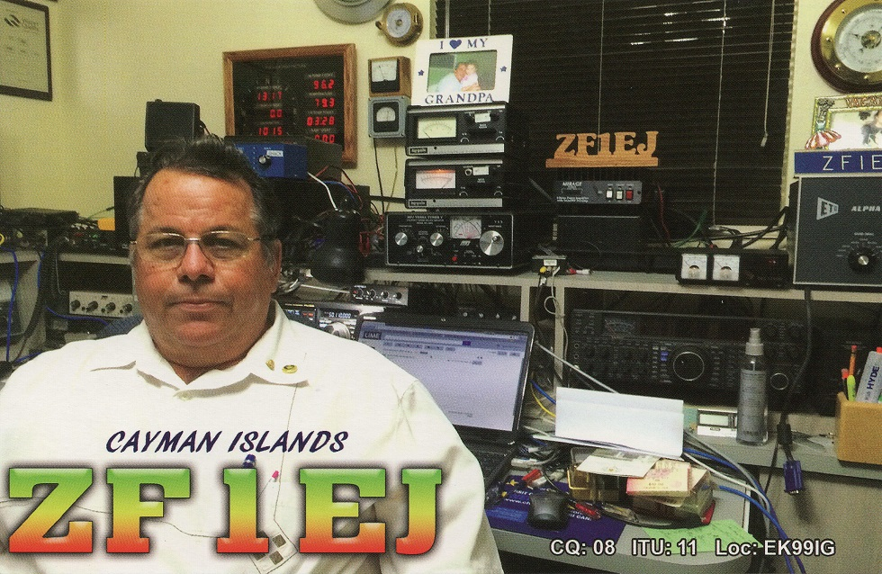
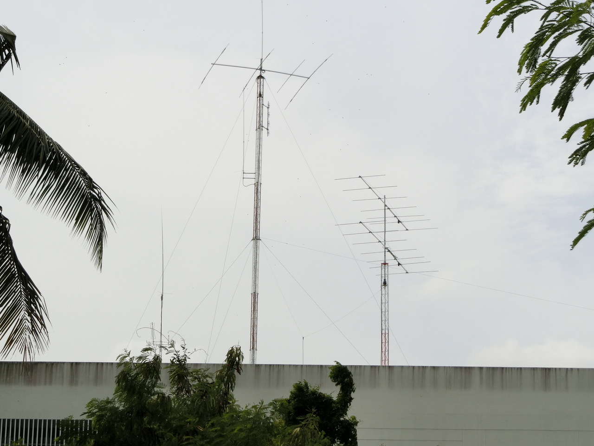

[Back Issues Jul.2018]
TIME:UTC(JST-09:00)
Report from JA1RJU(PM95sq)
31.JuL.2018(15:00c)
○(FT8=> NA. ASIA & EUの入感局=>(22:00z-10:00z)
KL7HBK 23:29:00- 50.313-**** FT8 -20dB QSO with JA1/7
↓
-------------------------------------------------------------------
RM0F 00:09:15- 50.313-**** FT8 -17dB into JA1
BU2BV 00:24:45- 50.313-682 FT8 -14dB QSO with JA1/2/0
JD1BHA 00:42:00- 50.313-**** FT8 -12dB QSO with JA1/2
↓
BV6CC 01:25:15- 50.313-**** FT8 -20dB QSO with JA6
↓
HL2ADY 01:49:15- 50.313-**** FT8 -12dB QSO with JA1
↓
4F3OM 02:26:30- 50.313-1097 FT8 -12dB CQ(PK04)
4F3OM 02:27:00- 50.313-1097 FT8 -10dB QSO with JA1/3/6/9
↓
DU1/JA3FJE 02:39:15- 50.313-1399 FT8 -23dB CQ(PK04)
DU1/JA3FJE 02:42:15- 50.313-1399 FT8 -03dB QSO with JA3
↓
HL4CCM 02:44:15- 50.313-**** FT8 -15dB QSO with 4F3OM
BI4SDT 02:48:15- 50.313-1802 FT8 -19dB CQ(PM01)
↓
4F3OM 02:56:30- 50.313-1102 FT8 -08dB CQ(PK04)
BG4VRG 03:02:45- 50.313-1058 FT8 -11dB CQ(OM93)
BG4VRG 03:03:45- 50.313-1058 FT8 -14dB QSO with JA3
DU1/JA3FJE 03:04:15- 50.313-1399 FT8 -03dB QSO with JA3/6/8
DU6GG 03:09:45- 50.313-**** FT8 -03dB QSO with JA4
↓
BD7OH 03:17:30- 50.313-1267 FT8 -14dB CQ(OL72)
4F3OM 03:37:30- 50.313-1103 FT8 -10dB QSO with JA1/2/3/4/BD7OH
JD1BHA 03:58:30- 50.313-**** FT8 -14dB QSO with JA1/0
↓
BH4IGO 06:27:00- 50.313-914 FT8 -03dB QSO with JA1/2/3
DU3GKT 06:51:30- 50.313-**** FT8 -10dB QSO with JA0
BA5DX 07:00:15- 50.313-**** FT8 -13dB QSO with JA0
BH8OMZ 07:03:30- 50.313-**** FT8 -01dB QSO with JA0
↓
IS0AWZ 07:47:00- 50.313-**** FT8 -17dB into JA2
BG2AUE 07:50:30- 50.313-1804 FT8 -08dB CQ(PN35)
SV1DH 08:35:00- 50.313-1992 FT8 -14dB CQ AS(KM27)
SV1DH 08:38:00- 50.313-1992 FT8 -14dB QSO with JA1
LA6VQ 08:59:00- 50.313-**** FT8 -21dB into JA0
↓
SV2JAO 09:16:30- 50.313-**** FT8 into JA9
Report from JA1RJU(PM95sq)
30.JuL.2018(15:00c)
○(FT8=> 本日のNA方面の入感局=21:30z-06:30z)
-------------------------------------------------------------------
W7EW 22:06:30- 50.313-**** FT8 -17dB into JA1/7
WB8VLC 22:24:00- 50.313-**** FT8 -16dB into JA1/7
KZ1W 22:30:00- 50.313-**** FT8 -18dB into JA7
W7DGZ 22:28:00- 50.313-**** FT8 -18dB into JA7
W7BA 22:26:00- 50.313-**** FT8 -13dB QSO with JA7
KB7ME 22:36:00- 50.313-**** FT8 -14dB QSO with JA1
KC7RG 22:38:00- 50.313-**** FT8 -17dB into JA7
W7EW 22:38:30- 50.313-**** FT8 -18dB into JA7
W7MEM 22:46:00- 50.313-**** FT8 -11dB QSO with JA7
K7BTW 22:59:00- 50.313-**** FT8 -15dB QSO with JA7
VA7FC 23:04:00- 50.313-**** FT8 -19dB into JA1/7
W7FI 23:13:00- 50.313-1764 FT8 -14dB QSO with JA1/0
K7AR 23:15:00- 50.313-**** FT8 -15dB QSO with JA1/7
W7VAS 23:15:00- 50.313-**** FT8 -20dB into JA1
VE7SV 23:46:00- 50.313-**** FT8 -11dB QSO with JA1
VA7FC 23:50:00- 50.313-**** FT8 -118B QSO with JA1/2/7
WB8VLC 23:53:00- 50.313-945 FT8 -16dB QSO with JA1
--------------------------------------------------------------------
K7AR 00:12:30- 50.313-**** FT8 -12dB QSO with JA1
VE7DAY 00:12:30- 50.313-**** FT8 -16dB QSO with JA1
WA7ZWD 03:17:00- 50.313-**** FT8 -19dB into JA1
VE7DAY 03:27:00- 50.313-**** FT8 -12dB into JA1
↓
(Asia)
------------------------------------------------------------------
○(FT8=> Asia & South East Asia & EUの入感局=>(04:00z-)
------------------------------------------------------------------
↓
9M2TO 04:41:30- 50.313-1932 FT8 -08dB QSO with JA1/0
9M2TO 05:31:00- 50.313-1932 FT8 -11dB CQ(OJ05)
↓
9M2TO 05:43:30- 50.313-1931 FT8 -11dB CQ(OJ05)
9M2TO 05:56:00- 50.313-1932 FT8 -11dB QSO with JA1/2
9M2TO 05:58:30- 50.313-1929 FT8 -11dB CQ(OJ05)
↓
JD1BHA 06:22:15- 50.313-**** FT8 -11dB into JA0
↓
JD1BHA 08:44:45- 50.313-722 FT8 -01dB QSO with JA1/7/0
↓
-------------------------------------------------------------------
Report from JA1RJU(PM95sq)
29.JuL.2018(15:00c)
|
◎今朝、FT8で北米を狙って居たJA'sを驚かせたのは、21:51z(06:51JST)にCQを出している南米・コロンビアのHK3Wの-19dBのCQの入感だった。
この信号に気ずいたJA7QVI(QM08)がコールしたものの、HK3WはCQに応答してきた米国・コネチカット州のWZ1Vに-08dBのリポートを送りQSOを開始。21:53:00zにHK3Wが"73"を送った直後にJA7QVIがコールするも応答なし。21:53:30zからK9ELとQSOを開始しているのが -13dBで再び入感。このHK3Wが21:54zにK9ELに"RRR”のリポートを送ったのを最後に信号は途絶えた。
21:54:15からJA7QVI、JA7WSZなどが、22:07:45z頃までコールするもHK3Wの信号は再び入感する事は無かった。このHK3Wの信号はJA1でも確認している。
南米コロンビアとは2000年3月04日にF2のロングパスでHK3YHとJH4IUO間でJAから初QSOしているが、Es伝搬で南米の信号を確認したのは今回初めてとなる。
今回は残念ながらJAからのEsシーズンの南米との初QSOは成功しなかったが、夏のEsシーズンにも南米への伝搬の可能性があることを知る大きな目標を得た日となった。
(TNX・JA7QVI & JP1LRT)
◎台風12号は伊豆諸島付近で急カーブして南下、三重県に本土上陸しスピードが緩めながら瀬戸内海から九州へのルートを進んでいる。台風の直撃を免れた関東地方は予想された強風の影響も少なく日中には青空が戻った。
|


Esシーズンに初めてオープンしたZF1EJのQSL(TNX JA7QVI)
Report from JA1RJU(PM95sq)
28.JuL.2018(15:00b)
|
◎今までに無い西よりに進む"変則コース"で本土に接近中の台風12号は、今夜から未明にかけて関東沖を通過、東海地方に上陸が予想されている。午前中から伊豆諸島では暴風雨域に入り、午後には関東地方にも大雨注意報が出て、風雨は徐々に強まってきている。
昨日は早朝から昼近くまで北米が入感、北米と同時にノルウエーのLA7DFAが入感、JA1のパイルとなっていた。 午前中から中近東、ヨーロッパ方面はウクライナのUT7QF、モンゴルのJT1BV、パキスタンのAP2AMが入感していたが、本格的なヨーロッパのオープンは05:00JST頃からで、イタリア、ギリシャ、スペインなど地中海沿岸から、北日本でOJ0C(Market Reef)やGM3(Scotland)の入感もリポートされていたが、コンデションは18:00JST過ぎには急激に落ちてしまった。
ところが、21:00JST頃からウクライナからイタリアなど地中海沿岸まで再びオープンして日中と同様のJA-EU間のパイルアップが深夜の02:00JST過ぎまで続いた。
今朝はその反動か?、朝の北米方面の入感は無く、早朝から近場の台湾のBW9WにパイルアップするJAの信号でFT8の周波数は埋まっていた。
台風が伊豆半島に接近する中、週末の午前中は近場の中国、台湾、韓国と国内のQSOで賑わっていた。
午後からインドネシアのYC1MIIや中国、台湾など東南アジアからカザフスタンのUN8GCのオープンに続いて、14:20JST頃に入感して来たYO3DDZ、15:14JSTのYL2CP、15:45JSTのOH3SRの"常連”の入感がリポートされている。
16:22JST頃から入感しているオマーンのA41KTがJAのパイルとなっている。
17:20JST頃から、まだ台風の影響を受けていないエリアからYU、OE、S5、YO、DK、HA、UR、SPなどヨーロッパとのQSOがリポートされているが、クランクダウンしたアンテナではFT8もデコードしない。(19:00JST現在)
|
○(FT8=> Western Asia and South East Asia & EU =>15:00z-17:00z)
-------------------------------------------------------------
IK5ACO(14:54z-QSO).IC8SQS(15:02z-).IS0AWZ(15:09z-).IW0FFK
E73DN.UY1HY.I6FOR.9A2AA.IK0FTA.IC8SQS.D1DX.UT7QF.US0LW.UT4EX
UT5ECZ.IK6FBB.I0JX.UX1IW.YU7EF.IK4GTC.UW7LL.UR6QA.R6KA.9A5CW
-------------------------------------------------------------
○(FT8=> Western Asia and South East Asia & EU =23:58z-10:00z)
-------------------------------------------------------------
BW9W.UN8GC.YC1MII.VU3KAZ.YO3DDZ(05:25z-).KG6DX.YL2CP.A41KT.
UT5UGR.OK2VSO.S57RR.DK2BL.OK2POI.YO9HP.S52D.9A5CW.VU2KNS
DL5MGC.A41MS.DL2MIJ.OE3EVA.SP2IQW.OE3EVA.YU7FE.LY1G.YO6WW
S51DI.DK2EA.SP3PBG.OE1WEU.OK1VM.S59A.SP9HPA.DF3CP.DL7AV.DK8YY
YT1Q.OK2VSO.SP6NZ.A45XR.OM3EY.HA1RB.OK1DO.UR7DWW.
-------------------------------------------------------------
Report from JA1RJU(PM95sq)
27.JuL.2018(15:00d)
○(FT8=> 本日の入感局 NA =22:50z-03:00z)
-------------------------------------------------------------
K5FUV(AR).
WB1EAZ(CA).N3HI(CA).K6ZH(CA).N6HY(CA).W6GLS(CA).NA6L(CA)
WA6APQ(CA).K6RP(CA).KQ6RS(CA).WA6MEM(CA).AD6D(CA).N6RMJ(CA)
N6RV(CA).W6PJ(CA).K6ZZ(CA).W6TOD(CA).W6FL(CA).KK6NON(CA)
WA6APQ(CA).K6RP(CA).W6ZAR(CA).WB6DJI(CA).KA7IGN(CA).N6CA(CA)
AI1K(AZ).AK2L(AZ).W3RI(AZ).W5RCQ(AZ).N6RW(AZ).KY7M(AZ)
WA7NB(AZ).N7AED(AZ).W7OJT(AZ).K7NN(AZ).KQ7R(OR).NQ7R(AZ)
N7CW(AZ).KY7M(AZ).K7JE(AZ).W7USA(AZ).KV7K(NV).KC7B(AZ)
K7SP(AZ).WO7R(AZ).W7RV(AZ).KE7ES(AZ).KC7ES(AZ).WA0KDS(AZ).
VE7DAY(23:01z-).XE2CQ(23:00z-CQ JA).P41ESP(23:10z-?).
KL7HBK(AL).
-------------------------------------------------------------
○(FT8=> Western Asia and South East Asia & EU =01:30z-15:20z)
-------------------------------------------------------------
LA7DFA(23:20z-).JT1BV(00:08z-).EX8MLE(01:30z-).EX8MLT(02:18z-)
VK5XD(02:30z-JA7).UT7QF(02:45z-CQ).AP2AM(02:49z-CQ).
UX4UA.UT7UJ.VU2NKS.UG3GX.IK0FTA.UR2MO.UT7QF.IK0MHR.9K2YM.YO9HP
IK6DTB.IT9PQJ.IZ8VYU.UY5QZ.D1DX.I0JX.IK8DYD.UR5LAK.YX7MOV
IS0AWZ(06:13z-JA4).VU3KAZ.IK0MHR.UR3QCW.IK0VAQ.UR9QQ.YO3DDZ
UT2XQ.UR3QCW.IK7NXM.4O6AH(06:40z-JA1).UA9MA.UV1BZ.EA7HG.UR6QA
US6IF.LZ2WO.UX0UN.IT9GUL.IT9RZR.UY5QZ.US8ICM.IK8CNT.US1GDQ
SV1EDU.UY5ZZ.EA5ISZ.IW9HRZ.IT9PQJ.IT9TYR.IW9HII.YM2XHK.SV9CVY
SV2JAO.EA5IOG.UN5UN.IS0GQX(07:47z-JA5/6).UR6OA.CT1HZE.UY1HY
CT1IUA.SV1NZX.SV1DH.IZ8JAI.UR6QA.OE4VIE.9H1TX.UT2QQ.UT5UGR
EA8YV.IW9HRZ.PA2M.YO8WW.SV8RX.GM3POI.OJ0C(09:01z-JA7).IX0FKK
UX0UN(12:13z-).UR5WA.RD9D(12:28z-).UT2XQ(12:54z-QSO).YO3APJ
YO8BSE.YO9HP(13:48z-07dB).JZ2WO(13:50-).9A7Y(14:49z-CQ)
IK5ACO(14:54z-QSO).IC8SQS(15:02z-).IS0AWZ(15:09z-).IW0FFK
-------------------------------------------------------------
Report from JA1RJU(PM95sq)
26.JuL.2018(15:00c)
○(FT8=> 本日の入感局 NA =21:40z-09:10z)
-------------------------------------------------------------
AE3T(PA).
NN4T(TN).WU5E(TN)
K6EU(CA).N6RV(CA).N6RMJ(CA).WA6LIE(CA).K6KLY(CA).N6CA(CA)
N6ML(CA).W6AER(CA).W6CYX(CA).K7JA(CA).KR7O(CA).W6SR(CA)
KV6X(CA).N6JV(CA).AH0U(CA).K6ZZ(CA).K6IA(CA).W6TOD(CA)
W6WA(CA).N6PAW(CA).K6JJ(CA).KI6CG(CA).KJ6P(CA).AF6SA(CA)
K9YC(CA).KE6NDG(CA).K6SRZ(CA).K6FW(CA).AF6RT(CA).K6FG(CA)
W6BK(CA).KJ6KO(CA).AG6CV(CA).K9YC(CA)
K4XU(OR).K6UM(OR).KA6BIM(OR).AH6LE(OR).W7ETS(OR).W7TYN(OR)
W7GJ(OR).W7EW(OR).N7BAV(OR).H7CNH(OR).KF7HB(OR).KG7GDB(OR)
W7YAQ(OR).NK7Z(OR).WB8VLC(OR).W7KKE(UT).W7XU(SD).W7OJT(AZ)
WA7NB(AZ).K7KMR(AZ).N7AED(AZ).N7AMA(AZ).N6RW(AZ).KY7M(AZ)
K5XI(AZ).AK2L(AZ).W7OUU(ID).K7MAC(ID).N7ZO(ID).KV7K(NV)
N7WT(NV).K7CW(WA).W7FI(WA).KB7ME(WA).N7KSI(WA).
W9FF(IL).
N0AN(IA).WA0ROI(IA).ND0B(ND).K0GU(CO).W0MU(CO)
XE2X.XE2CQ.VE7DAY.VA3XDX.KL7HBK.VE7DAY(05:05z-)
-------------------------------------------------------------
○(FT8=> Western Asia and South East Asia & EU =03:41z-10:00z)
-------------------------------------------------------------
UN3GX(03:41z-CQ).EX8MLT(02:49z-CQ).UT6LX.9K2YM(03:58z-CQ).
YO3DDZ(06:25z-).SV1DH(09:39z-JA6)
-------------------------------------------------------------
Report from JA1RJU(PM95sq)
25.JuL.2018(15:00c)
○(FT8=> 本日の入感局 NA =21:40z-01:05z)
-------------------------------------------------------------
NN4T(TN).
K7CW(WA).K7MAC(ID).W7YAQ(OR).K6UM(OR).KE7SW(WA).KF7HB(OR)
K7ZO(ID).K7RF(OR).W7ID(ID).W7VS(OR).W7MEM(ID).KB7ME(WA)
N7NW(WA).N7BA(NV).N7BAV(OR).W3XS(OR).KE7D(AZ).W7ZSL(WA)
K7RF(OR).W7FI(WA).WA7SCH(WA).KD7PY(WA).W7GJ(OR).AG7N(WA)
XE2JS.VE7DAY.KL7HBK(07:22z-)
-------------------------------------------------------------
○(FT8=> Western Asia and South East Asia & EU =06:00z-10:00z)
-------------------------------------------------------------
UN8GC(06:00z-CQ).UK9AA.YL2CP.S59A.S57RR.SP4MPB.SP5MXL
SP8NR.SP9FKQ.SP8AWL.SP7AWG.OK1PI.
-------------------------------------------------------------
Report from JA1RJU(PM95sq)
24.JuL.2018(15:00c)
○(FT8=> 本日の入感局 NA =23:30z-01:05z)
-------------------------------------------------------------
N3XX(GA).K4OY(GA).W4LDH(VA).KX4R(GA).N4QWZ(TN).AC4TO(FL)
WA4CQG(AL).K6EID(GA)
N5JEH(NM).AA5AM(TX)
KB6KKW(UT)
K8OM(IA)
W9RPN(WI).K9KFR(IN).K9CT(IL).N9ISN(WI)
K0KUK(MN).K0SR(MN).N0AN(IA).N0TB(MN).WG0G(WI).W0VTT(MN)
K0GU(CO).W0MU(CO)
-------------------------------------------------------------
○(FT8=> Western Asia and South East Asia & EU =01:58z-09:00z)
-------------------------------------------------------------
TF3ML(22:49z-JA7).IS0AWZ(06:30z-).UT7UJ.EA6SX.UT2XQ.SV8RX.
UT5UGR.F6BLP.F5BZB.IT9RZR.UX0UN.LW2WO.EA3LL.I0KIB.IK0FTA(08:50z).
-------------------------------------------------------------
○(FT8=> ASIA & PA (00:25z-10:00z)
-------------------------------------------------------------
JT1BV(00:26z-).BA7OK.BD7OH.BG4VRG.BD8NBG.VR2XKW.BH4WPN.9M2TO
JD1BHA(03:16z-CQ).VR2KW.VR2ZLK.VR2UNG.BA4SI.
-------------------------------------------------------------
Report from JA1RJU(PM95sq)
23.JuL.2018(15:00c)
|
◎昨日は、午前中からタイ国(HS)の「CQ World Wide VHF Contest」の参加局の運用で賑わった6mだったが、今朝は北米の入感リポートも無く、久しぶりに静かな6mだった。 午前中は10:35JST頃から入感してきたEX9QTと、10:45JST頃から入感してきたJT1BVのパイルアップが午後まで続いていたのが目立った程度。
本格的なEU方面のオープンは14:50JST頃にJA6からSV5DKLの入感がリポートされたのが最初。15:20JST頃からJA7でYO3DDZが入感、この頃からEU方面が全国的にオープンし始めた。EU方面のコンデションは、イタリアを中心に地中海沿岸に広がり、南はCT、EA付近から北はフランス(F)付近までオープンしていた。
|
○(FT8=> 本日のASIA and South East ASIA & EUの入感局=01:58z-13:00z)
--------------------------------------------------------------------
IS0AWZ.IZ5EME.IK0DTB.IZ0RVI.IW9HII.IK0FTA.IK4WMA.IK6DTB.I0JX
IK5GQK.IK4ISR.I6FOR.I4CIL.IT9RZR.
EA1YV.EA7HG.EA3LL.EC1CT.EC1AP.EA3SX.EA2KR.EA5IJZ.EA5IOG.EA6SX
EA2KR.EA7RZ.EA5ISZ.
SV1AHF.SV5DKL.SV9CVY.SV1DH.SV1AHP.CT1EKY.CT1IUA.
F1GTU.F6FRR.F5BZB.F6BLP.F8RZ.F8ZW.DL2MIJ
9A7Y.9A5CW.YO3DDZ.YO9HP.HA0DU.HA8CE.YN3N.YU7FF.LZ2WO.S59A.
Z68M.T77C
EX9QT.UX4UA.UR7DWW.UR5LAK.
--------------------------------------------------------------------
○(FT8=> ASIA & PA (01:35z-10:00z)
JT1BV.DU7/PA0HIP.KG6DX.HS5HRZ.
--------------------------------------------------------------------


タイ国から”CQ World Wide VHF Contest”で運用したE2E ＆ HS0AC
Report from JA1RJU(PM95sq)
22.JuL.2018(15:00b)
|
◎タイ国(HS)のRASTから公表されていたコンテスト時のみにNBTCからの特別許可を得て運用していた6mバンドが、今年から許可を得ずに自由に運用する事が可能になったことにより、「CQ World Wide VHF Contest」の行われる7月21-23日の3日間、特別局のE2Eをはじめ、多くの局が6mにQRVしている。
運用は相変わらず「コンテスト」時のみに限定されているものの海外からのゲストの参加も可能とされ、JAからのOPも運用している。
今年の運用(6m)のコンテストは下記の通り。
●NBTC(Telecommunications Commission)
○ CQ World Wide VHF Contest: 21-23.July,2018
○ ARRL September VHF Contest: 08-10.September,2018
|
○(FT8=> 本日のNA方面の入感局=22:40z-01:00z)
-------------------------------------------------------------
W0FK.N0AN.N0LWF.W5LE.NN4X.N0LL.K0TPP.K9AN.W5VG.N4JQQ.K0DEQ
KM0A.KL7HBK.K0CM.K6EID.N5OMG.W0JW.KE4UW.K4XO.K0SD.AK9S.N3XX
N5BCA.W7XU.KD9GKL.W0SD.AC4TO.N0AN.K0GU.KA9CFD.VA4OXW.K4SX
W3UUM.KH6/K6MIO.K5YCM.NH6Y.K5QR.KB7RUQ.K5DG.K5OB.K5RX.XE1H
-------------------------------------------------------------
○ CQ World Wide VHF Contest: 21-23.July,2018=タイ国(RAST)
E2E.HS1HSE.HS3ANP.HS3LSE.E27AU.HS2UPR.HS5YLK.HS0ACS.HS0AC
-------------------------------------------------------------
○(FT8=> 本日のASIA and South East ASIA & EUの入感局=01:58z-13:00z)
9M2/JG3TTO.9M4DXX.9M2TO.
-------------------------------------------------------------
EX8MLT.EX9QT.UN8GC.UK9AA.UN6T
-------------------------------------------------------------
Report from JA1RJU(PM95sq)
21.JuL.2018(15:00c)
○(FT8=> 本日のNA方面の入感局=23:30z-01:00z)
-------------------------------------------------------------
N4MW(VA).XE2OR.K8OM(IA).K5NA(TX).XE2AT.K5RK(TX).XE2YWH.W5TCX(TX)
-------------------------------------------------------------
○ CQ World Wide VHF Contest: 21-23.July,2018=タイ国(RAST)
HS3LSC 00:58:30- 50.313-**** FT8 -09dB into JA7
↓
K5RK 00:59:30- 50.313-**** FT8 -22dB into JA7
HS3LSC 01:00:30- 50.313-**** FT8 -01dB QSO with JA1/2/3/6/7/0
↓ ↓
DU1/JA3FJE 01:10:45- 50.313-**** FT8 -01dB QSO with JA1
HS3ANP 01:13:30- 50.313-1133 FT8 -09dB QSO with JA1/2/3/7/DS4
UN8GC 01:17:45- 50.313-**** FT8 -01dB into JA1
↓
HS2JQC 01:27:00- 50.313-**** FT8 -08dB QSO with JA1/7
HS2LSC 01:29:00- 50.313-**** FT8 -08dB QSO with JA1/3
↓
4S3OM 01:47:30- 50.313-**** FT8 -14dB QSO with JA0
HS2LSC 01:56:00- 50.313-**** FT8 -16dB QSO with JA0
↓
EX9QT 02:37:30- 50.313-**** FT8 into JA3
↓
KG6DX 02:54:30- 50.313-**** FT8 +00dB QSO with JA7/BD6JN
↓
HB0CC 08:11:30- 50.313-**** FT8 -15dB QSO with JA1/6 (1st Liechtenstein)
↓
HS0AC 09:28:30- 50.313-1521 FT8 -06dB QSO with JA1
-------------------------------------------------------------
○(FT8=> 本日のASIA and South East ASIA & EUの入感局=01:58z-13:00z)
-------------------------------------------------------------
HS3LSE(00:58z-).HS3ANP(01:13z-).UN8GC(01:18z-).HS2JQC.4F3OM
VR2XLQ.BD4RQ.EX9QT(02:37z-).BD7JNA.BD6JN.BD7TBP.VR2XLO.BD7OH
KG6DX(02:54z-).BD7SPN.BI4SDT.BD4RQ.BD7BW.BG6BB.BA1PK.BG6CJR
US8ICM(03:54z-).BG9OF.US8UA.UW1HM.BA5DX.UR5UH.SV1QEZ.R6KA.Z68M
SV1DH.IK7LJZ.UT7UJ.IZ5EME.IK2GSO.HA8FK.YO8RHI.UT4EX.UT2XQ.UT4XU
UT7TA.YO2LEA.UW8SM.IK4ISR.YO5CRI.HA5JI.SV2DOD.IW0FFK.S57TW.S59A
YU7FF.OE4VIE.OE3EMC.S52D.HA2NP.IE0FFK.IK4WMA.SV1QEZ.I4EAT.IK5EKV
UT5XR.S57RR.US5ME.IK0FTA.OE5OLL.SP9FUY.9A2X.I4GAS.OK2GM.HA8UT
S51DT.IK8DYD.YU2LEA.HB9Q.HB0CC.I4ZQS.S59SV.YO9HP.HS0AC.etc.
-------------------------------------------------------------
Report from JA1RJU(PM95sq)
20.JuL.2018(15:00c)
K0GU 23:25:30- 50.313-**** WSJT FT8 -09dB QSO with JA2
VE7SL 23:26:30- 50.313-**** WSJT FT8 -19dB into JA1/2
WA7BRL 23:26:30- 50.313-**** WSJT FT8 -15dB into JA7
K1TOL 23:28:00- 50.313-**** WSJT FT8 into JA7
W8OI 23:28:30- 50.313-**** WSJT FT8 -15dB into JA2
W7FI 23:31:30- 50.313-2286 WSJT FT8 -08dB QSO with JA1
VE7GEM 23:34:30- 50.313-**** WSJT FT8 -16dB into JA2/0
NU7J 23:35:30- 50.313-**** WSJT FT8 -18dB into JA2
W5ADD 23:38:45- 50.313-**** WSJT FT8 into JA2
WS5W 23:42:30- 50.313-**** WSJT FT8 -14dB into JA1
K7CW 23:44:30- 50.313-**** WSJT FT8 +01dB QSO with JA8
W5RYA 23:48:30- 50.313-**** WSJT FT8 into JA1
VE7ADY 23:50:00- 50.313-**** WSJT FT8 -20dB into JA2
XE2OR 23:50:30- 50.313-**** WSJT FT8 into JA2
K5QKC 23:52:00- 50.313-**** WSJT FT8 -18dB into JA7
N5OK 23:52:30- 50.313-**** WSJT FT8 -19dB into JA1
N6RV 23:52:30- 50.313-**** WSJT FT8 -18dB into JA7
W5RYA 23:56:00- 50.313-**** WSJT FT8 -06dB into JA1
VE6WQ 23:58:30- 50.313-**** WSJT FT8 -18dB into JA1
--------------------------------------------------------------------------
KG5THG 00:00:00- 50.313-**** WSJT FT8 -18dB into JA7
XE2OR 00:01:00- 50.313-**** WSJT FT8 -18dB QSO with JA0
VE6WQ 00:02:30- 50.313-**** WSJT FT8 -18dB QSO with JA1
N5DG 00:03:30- 50.313-**** WSJT FT8 -19dB into JA1/9
W5AFY 00:04:30- 50.313-**** WSJT FT8 -15dB into JA1
W5RYA 00:05:30- 50.313-**** WSJT FT8 -18dB QSO with JA0
K5LA 00:06:00- 50.313-**** WSJT FT8 -09dB into JA9
JD1BHA 00:07:30- 50.313-**** WSJT FT8 -13dB into JA7
JD1BHA 00:09:00- 50.313-1010 WSJT FT8 -09dB QSO with JA1
XE2OR 00:10:30- 50.313-**** WSJT FT8 -19dB into JA1
VE7DAY 00:13:00- 50.313-**** WSJT FT8 -11dB into JA0
XE2JS 00:13:00- 50.313-**** WSJT FT8 -19dB QSO with JA7
XE2OR 00:17:00- 50.313-**** WSJT FT8 -12dB QSO with JA1
N5OSK 00:25:00- 50.313-**** WSJT FT8 -17dB into JA2
XE2HWB 00:30:00- 50.313-**** WSJT FT8 -08dB into JA7 & QSO
W7FI 00:31:00- 50.313-1911 WSJT FT8 -14dB QSO with JA1
XE2HWB 00:34:00- 50.313-**** WSJT FT8 -13dB into JA9
XE2OR 00:37:30- 50.313-1950 WSJT FT8 -13dB QSO with JA7
XE2JS 00:37:30- 50.313-**** WSJT FT8 -08dB into JA7
XE1H 00:40:00- 50.313-**** WSJT FT8 into JA7
KR7O 00:40:30- 50.313-**** WSJT FT8 -16dB QSO with JA3
VE7DAY 00:43:30- 50.313-**** WSJT FT8 -15dB into JA1/2/0
XE2OR 00:45:00- 50.313-**** WSJT FT8 -18dB into JA2
N1RWY 00:45:30- 50.313-**** WSJT FT8 -17dB QSO with JA7
XE2HWB 00:54:00- 50.313-**** WSJT FT8 -16dB into JA1/3/7/8
KD7PY 00:57:30- 50.313-**** WSJT FT8 +04dB QSO with JA7
XE2HWB 01:05:00- 50.313-**** WSJT FT8 -10dB QSO with JA7
NJ5W 01:28:00- 50.313-**** WSJT FT8 -08dB QSO with JA7
K5YCM 01:28:30- 50.313-**** WSJT FT8 -19dB into JA7
VE7DAY 01:30:30- 50.313-**** WSJT FT8 -07dB into JA1/2/3/4/6/7/9
4F3OM 01:44:00- 50.313-**** WSJT FT8 into JA1
W7FI 01:54:00- 50.313-1936 WSJT FT8 -14dB/13dB (QSO)
VE7DAY 02:14:00- 50.313-2097 WSJT FT8 -19dB CQ(CO70)
4F3BZ 03:03:30- 50.313-1439 WSJT FT8 -16dB QSO with JA1/2/7
4F3BZ 03:19:15- 50.313-1435 WSJT FT8 -12dB CQ(PK04)
DU6GG 03:24:45- 50.313-1231 WSJT FT8 -17dB CQ(PK10) & QSO with JA1/2/9
↓
DU1/JA3FJE 03:46:45- 50.313-1223 WSJT FT8 -09dB CQ(PK04)
↓
JD1BHA 03:53:30- 50.313-**** WSJT FT8 -08dB QSO with JA9
DU3GKT 04:06:30- 50.313-**** WSJT FT8 -05dB QSO with JA1
DU6GG 04:28:30- 50.313-**** WSJT FT8 -03dB QSO with JA1
4F3BZ 04:32:30- 50.313-**** WSJT FT8 +02dB QSO with JA1
↓
DU6/PE1NSQ 04:39:00- 50.313-**** WSJT FT8 -14dB QSO with JA1
XW4XR 04:52:45- 50.313-**** WSJT FT8 -14dB QSO with JA4
↓
(13:00z-)
------------------------------------------------------------------------------
Report from JA1RJU(PM95sq)
19.JuL.2018(15:00c)
W7DGZ 23:30:30- 50.313-**** WSJT FT8 -16dB into JA1/2/5/7
------------------------------------------------------------------------------
↓ (VR2IL.BD8NBG.BD7OH.DS5USH.9M2TO.BU2BV.BV2KI.VR2XRW.BG8UF.BA5DX.VR2ZLK)
XW4XR 01:42:45- 50.313-648 WSJT FT8 +01dB CQ(OK17)
XW4XR 01:48:15- 50.313-650 WSJT FT8 +00dB QSO with JA1/2/3/6/7/9/0
↓
XW4XR 02:04:15- 50.313-651 WSJT FT8 +01dB QSO with JA1/2/3/7/9/HL4/BA4
↓
XW4XR 02:33:15- 50.313-650 WSJT FT8 +00dB QSO with JA1/2/3/5/JR6
↓
4F3OM 02:49:30- 50.313-1253 WSJT FT8 -11dB QSO with JA1/2/3/7/DS5
↓
UN8GC 03:00:00- 50.313-1451 WSJT FT8 -14dB CQ(MN83)
UN8GC 03:01:30- 50.313-1451 WSJT FT8 -14dB QSO with JA1
XW4XR 03:02:15- 50.313-650 WSJT FT8 +03dB QSO with JA3
↓
4F3OM 03:16:15- 50.313-1251 WSJT FT8 -13dB QSO with JA5
UN8GC 03:16:30- 50.313-1450 WSJT FT8 -16dB CQ(MN83)
EX9QT 03:49:00- 50.313-1245 WSJT FT8 -06dB CQ(MN82)
↓
UR3QCW 04:05:00- 50.313-**** WSJT FT8 -16dB into JA1
UR9QQ 04:14:30- 50.313-**** WSJT FT8 -17dB QSO with JA1
UT7UJ 04:15:15- 50.313-**** WSJT FT8 -10dB QSO with JR6
↓
UT1HY 04:17:30- 50.313-1213 WSJT FT8 -08dB QSO with JA1
UR5LAK 04:24:00- 50.313-2072 WSJT FT8 -16dB CQ(MN89)
UW1HM 04:24:30- 50.313-827 WSJT FT8 -18dB QSO with JA1
VU2ATN 04:27:00- 50.313-1296 WSJT FT8 -13dB QSO with JA2
UT7GH 04:27:30- 50.313-**** WSJT FT8 -16dB into JA1
UT6LX 04:29:00- 50.313-**** WSJT FT8 -13dB into JA0
US8UX 04:55:30- 50.313-1129 WSJT FT8 -14dB QSO with JA5
UR4LRG 04:56:30- 50.313-894 WSJT FT8 -03dB CQ(KO80)
UT9LB 05:01:30- 50.313-2542 WSJT FT8 -16dB CQ(KN89)
UR4LRG 05:06:00- 50.313-**** WSJT FT8 +00dB QSO with JA1
UT2XQ 05:07:30- 50.313-**** WSJT FT8 -08dB QSO with JA1
UB5LCV 05:15:30- 50.313-1877 WSJT FT8 -12dB QSO with JA2
↓
UT9LC 05:47:30- 50.313-**** WSJT FT8 -07dB QSO with JA8
UT7QF 06:11:00- 50.313-1269 WSJT FT8 -17dB CQ(KN77)
D1DX 06:11:30- 50.313-**** WSJT FT8 -15dB QSO with JA1
US3LR 06:15:30- 50.313-2112 WSJT FT8 -21dB QSO with JA8
IW9HII 06:27:00- 50.313-**** WSJT FT8 -19dB QSO with JA1
↓
US5WE 06:36:30- 50.313-904 WSJT FT8 -17dB CQ(KN29)
UT4XU 06:37:00- 50.313-1615 WSJT FT8 -10dB CQ(KO40)
UX1BZ 06:39:30- 50.313-1809 WSJT FT8 -12dB QSO with JA7
YO3DDZ 06:42:30- 50.313-741 WSJT FT8 -20dB QSO with JA1
↓
Z68M 06:53:30- 50.313-**** WSJT FT8 into JA2
↓
UX0FF 07:02:00- 50.313-2294 WSJT FT8 -04dB QSO with JA9
↓
LZ2WO 07:15:00- 50.313-1240 WSJT FT8 -14dB QSO with JA2
LZ2NW 07:15:00- 50.313-2141 WSJT FT8 -22dB QSO with JA4
YO6MM 07:30:30- 50.313-1505 WSJT FT8 -09dB/-09dB(QSO)
YO4CVV 08:05:00- 50.313-1350 WSJT FT8 -17dB/-16dB(QSO)
YT3N 08:17:00- 50.313-1273 WSJT FT8 -07dB/-13dB(QSO)
↓
(15:00z)
------------------------------------------------------------------------------
|
◎早朝の北米は東日本で短いオープンがあり、FT8ではKX4R(GA)、KA9CFD(IL)、W7DGZ(WA)やハワイのKH6Uなどがリポートされている。
09:00JST頃には東南アジア方面が強力にオープン、フィリピンの4F3OMや中国、香港、などと共に10:43JSTにCQを出すラオスのXW4XRが入感、JA'sのパイルアップが12:00JST過ぎまで続いていた。XW4XRがフェードアウトする直前に入れ替わる様にUN8GCのCQが入感。午後の西アジアからヨーロッパ方面のオープンが始まった。12:49JSTにCQを出すEX9QTが-06dBで強力に入感、13:00JSTを過ぎる頃にはカザフスタンからウクライナ付近の信号が上昇、コンディションはヨーロッパ中央部から北はフィンランド(OH)から南は地中海沿岸のギリシャ(SV)からイタリア(I/IW)まで広範囲のオープンで賑わっていた。
KOSOBOからの運用は18日までの予定だったZ68Mは、運用を23日まで延期して今日もQRVしていた。ヨーロッパの局やヨーロッパを呼ぶJAのパイルで、FT8のZ68MはJA1(PM95)では確認できなかったが、18:10JST頃に50.050MHzのCWで運用してきた。
指定したUP5でZ68MをコールするJA1/2の局が入感していたが相手は確認できなかった。
-------------------------------------------------------------
Z68M 0908Z 50050.0 JA still open UP 5 Z32ZM
-------------------------------------------------------------
Z68M 0906Z 50050.0 QSX UP 5 Z32ZM
-------------------------------------------------------------
|
Report from JA1RJU(PM95sq)
18.JuL.2018(15:00d)
KL7HBK 22:33:00- 50.313-**** WSJT FT8 -14dB into JA7(QM08)
↓
FK8GX 22:59:00- 50.313-**** WSJT FT8 -10dB into JR6
↓
AA7A 23:15:30- 50.313-**** WSJT FT8 into JA2
↓
WO7R 23:38:30- 50.313-**** WSJT FT8 -16dB into JA1
------------------------------------------------------------------------------
BU2BV 00:00:45- 50.313-1617 WSJT FT8 +12dB CQ(PL05)
↓ (BV2KI.HL4HPK.DS5USH.VR2KW.etc)
UN8GC 03:52:00- 50.313-1246 WSJT FT8 -14dB CQ(MN83) & QSO with JA3
↓
UK9AA 04:33:00- 50.313-2010 WSJT FT8 -17dB CQ(MN41)
↓
UN8GC 04:50:30- 50.313-1247 WSJT FT8 -13dB CQ(MN83)
↓ (BD6JN.DS2XBJ.BA4SI.BA5DX.etc)
UN8GC 05:19:00- 50.313-1247 WSJT FT8 -06dB CQ(MN83)
UK9AA 05:21:30- 50.313-2012 WSJT FT8 -18dB CQ(MN41)
↓ (BI4SDT.BH4TVU.BH4UTT.HL2ADY)
9K2YM 05:59:30- 50.313-**** WSJT FT8 -07dB QSO with JR6/JA3
↓
YO3DDZ 06:01:30- 50.313-**** WSJT FT8 -19dB into JA3/4
↓
9K2YM 06:12:30- 50.313-742 WSJT FT8 -17dB CQ(LL48)
UN8GC 06:18:30- 50.313-1246 WSJT FT8 -15dB CQ(MN83)
UK9AA 06:18:30- 50.313-2009 WSJT FT8 -19dB CQ(MN41)
↓
D1DX 06:19:00- 50.313-**** WSJT FT8 -12dB into JA6
↓
UX4UA 06:29:00- 50.313-**** WSJT FT8 -10dB QSO with JA5
UT7UJ 06:29:30- 50.313-**** WSJT FT8 -12dB QSO with JA4
↓
UN8GC 06:40:00- 50.313-1244 WSJT FT8 -14dB CQ(MN83)
UK9AA 06:40:30- 50.313-2009 WSJT FT8 -16dB CQ(MN41)
↓
UR5LAK 07:00:00- 50.313-**** WSJT FT8 -19dB QSO with JA5
UW1HM 07:01:00- 50.313-**** WSJT FT8 -19dB QSO with BT4
↓ (BD4WN.BG3ISR.BG3IYX.HL3EQG.)
9K2YM 07:10:30- 50.313-**** WSJT FT8 into JA5
↓
UR5LAK 07:22:00- 50.313-**** WSJT FT8 -10dB QSO with JA7
9K2YM 07:23:30- 50.313-**** WSJT FT8 -15dB QSO with JA1/2/3/4/5
↓
HA3FOK/MM 07:25:00- 50.313-985 WSJT FT8 -18dB CQ(RN08)
9K2YM 07:25:00- 50.313-**** WSJT FT8 -14dB QSO with JA1/2/3/4/6
↓
D1DX 07:27:00- 50.313-**** WSJT FT8 -13dB QSO with JA4/6
SV9CVY 07:27:30- 50.313-**** WSJT FT8 -13dB QSO with JR6
UY1HY 07:28:00- 50.313-**** WSJT FT8 -10dB QSO with JA6
SP4MFB 07:29:30- 50.313-**** WSJT FT8 -17dB QSO with JS6
HA3FOK/MM 07:32:30- 50.313-976 WSJT FT8 -17dB/+09(QSO)
↓
SV9CVY 07:34:30- 50.313-**** WSJT FT8 -13dB QSO with JA5/6/JR6
YO3DDZ 07:39:00- 50.313-**** WSJT FT8 -12dB QSO with JA2
UR5LAK 07:39:30- 50.313-**** WSJT FT8 QSO with JS6
SV5/SV1LK 07:41:00- 50.313-**** WSJT FT8 -17dB QSO with JA4
SP4MFB 07:55:30- 50.313-**** WSJT FT8 QSO with JA6
UN8GC 08:05:00- 50.313-1244 WSJT FT8 -13dB CQ(MN83)
LY1G 08:06:00- 50.313-**** WSJT FT8 -19dB into JR6
↓
Z68M 09:58:30- 50.313-**** WSJT FT8 into? JA3
↓
SV2BWY 10:34:00- 50.313-**** WSJT FT8 -16dB into JA2
EK7DX 10:59:15- 50.313-**** WSJT FT8 -16dB into JA2
EX9QT 11:00:00- 50.313-1268 WSJT FT8 -13dB CQ(MN82)
UN8GC 11:00:00- 50.313-1245 WSJT FT8 -15dB CQ(MN83)
↓
EX7DX 11:40:00- 50.313-**** WSJT FT8 into JA9
↓
(13:30z)
Report from JA1RJU(PM95sq)
17.JuL.2018(15:00d)
|
◎早朝の北米の入感は東日本から北米南東部エリアのフロリダ(FL)、ジョージア(GA)、テネシー(TN)など、W4(GA)を中心とした州がスポット的にオープンする珍しい伝搬だった。手前のアラバマ(AL)、モンタナ(MO)、イリノイ(IL)の各州も短時間聞こえていたが、何時も入感する西海岸のW5/6/7などは当地(PM95)では確認されなかった。
午後のアジア(VU2ATN)、中近東(9K2YM)、ヨーロッパ方面は昨日ほどコンデションは長続きする事なく、16:40JST頃にEX9QTのCQが-11dB程度で聞こえたのと入れ違いに、16:30JST頃からVK8AWとVK8MSがヨーロッパのYO3DOZとQSOしているのがJAに強力に入感していた。
|
○(FT8=> 本日のNA方面の入感局=23:40z-01:40z)
-------------------------------------------------------------
K0TPP(MO).N4QWZ(TN).WX4G(FL).K9ZM(IL).N1DG(MA).KD5M(FL)
WC4H(FL).WG8S(AL).K0WYN(MO).W3CP(GA).W4WT(GA).N3XX(GA)
W4IMD(GA).KO0Z(IL).K4RB(GA).WB4LMQ(FL).KC4AAW(NC).WB4JWM(GA)
K4HB(GA).WS4S(TN).KN4JX(MO).K0DEQ(MO).WA4LXU(GA).AA7UN(ID)
-------------------------------------------------------------
●DU7/PA0HIP(23:45z).DU1/JA3FJE.
-------------------------------------------------------------
○(FT8=> 本日のSouth East ASIA & EU方面の入感局=01:00z-13:00z)
-------------------------------------------------------------
EX8MLT(01:38=CQ).DU1/JA3FJE.UN8GC(01:43=CQ).UN6T.UK8FF.UK9AA
EX9QT.9K2YM(03:45z-).VU2ATN(03:47z-).5B4ALX.VK8MS(07:28z-CQ)
VK8AW(QSO with YO3DDZ).YB1UUU.SV5DKL.
-------------------------------------------------------------
●(FT8=> 本日JA7でQSO出来た北米の局=＞ TNX JA7QVI(QM08)
Call Date UTC Mode Freq State
----------------------------------------------------------
W7GJ 16-Jul 21:17 FT8 50.313 MT
NU4Y 16-Jul 21:20 FT8 50.313 FL
W6DE 16-Jul 21:32 FT8 50.313 CA
W4SO 16-Jul 21:35 FT8 50.313 FL
AH0U 16-Jul 21:47 FT8 50.313 CA
WA7JAY 16-Jul 21:58 FT8 50.313 CA
K5HK 16-Jul 22:04 FT8 50.313 NV
N3XX 16-Jul 22:19 FT8 50.313 GA
K0DEQ 16-Jul 22:55 FT8 50.313 MO
KN4JX 16-Jul 23:09 FT8 50.313 MO
K0TPP 16-Jul 23:20 FT8 50.313 MO
WA1QDP 16-Jul 23:23 FT8 50.313 FL
K0WYN 16-Jul 23:45 FT8 50.315 MO
WC4H 16-Jul 23:47 FT8 50.315 FL
WG8S 16-Jul 23:48 FT8 50.315 AL
K9ZM 17-Jul 0:01 FT8 50.315 IL
W3CP 17-Jul 0:15 FT8 50.315 GA
N3XX 17-Jul 0:16 FT8 50.315 GA
WX4G 17-Jul 0:17 FT8 50.315 FL
W4IMD 17-Jul 0:24 FT8 50.315 GA
K4HB 17-Jul 0:29 FT8 50.315 GA
WB4LMQ 17-Jul 0:30 FT8 50.315 FL
WB4JWM 17-Jul 0:33 FT8 50.315 GA
K6EID 17-Jul 0:43 FT8 50.315 GA
--------------------------------------------------------
Report from JA1RJU(PM95sq)
16.JuL.2018(15:00d)
ZF1EJ 21:31:00- 50.313-**** WSJT FT8 "CQ JA into JA1"
ZF1EJ 21:37:00- 50.313-**** WSJT FT8 QSO with JA1(QM05)
↓
BD8NBG 01:36:00- 50.313-2050 WSJT FT8 -01dB QSO with JA1
↓
EX9QT 01:55:00- 50.313-**** WSJT FT8 -13dB QSO with JA2/3
↓
EX8MLT 03:00:00- 50.313-**** WSJT FT8 -09dB QSO with JS6
↓
A92HK 03:04:30- 50.313-**** WSJT FT8 -15dB QSO with JA3/4
A92GE 03:19:00- 50.313-**** WSJT FT8 -13dB QSO with JA2/3/5/6/0
A92HK 03:57:30- 50.313-**** WSJT FT8 -15dB QSO with JA3
A92AA 04:08:00- 50.313-**** WSJT FT8 -04dB QSO with JA3/4/5/6
UN6T 04:35:45- 50.313-**** WSJT FT8 -15dB QSO with JA6
↓
EX9QT 05:02:00- 50.313-**** WSJT FT8 -15dB QSO with DS5USH
UK9AA 05:07:30- 50.313-**** WSJT FT8 -13dB QSO with JA3
LZ1ZP 05:11:00- 50.313-**** WSJT FT8 -11dB QSO with JA6
LZ4TL 05:13:30- 50.313-**** WSJT FT8 -16dB QSO with JA6
↓
A92AA 05:18:30- 50.313-1396 WSJT FT8 -12dB CQ(LL56)
UK9AA 05:20:00- 50.313-2510 WSJT FT8 -12dB CQ(MN41)
UK9AA 05:22:00- 50.313-2510 WSJT FT8 -12dB QSO with JA2
EX9QT 05:33:30- 50.313-1244 WSJT FT8 -10dB CQ(MN82)
VU2NKS 05:41:15- 50.313-**** WSJT FT8 -19dB into JA1/2/6
EX9QT 06:17:30- 50.313-1246 WSJT FT8 -02dB CQ(MN82)
↓
9K2GS 06:41:00- 50.313-**** WSJT FT8 -07dB QSO with JA1
↓
KG6DX 08:08:45- 50.313-**** WSJT FT8 -12dB QSO with JA1
↓
Report from JA1RJU(PM95sq)
15.JuL.2018(15:00d)
|
◎昨日同様今朝の6mの北米方面のコンデションは、JA1でも北米西海岸やカナダのVE5DFが入感してQSOが出来たエリアもあったが、高層ビル遮られた当地では、FT8はデコードできなかった。
北米がフェードアウトしてからUK8FFが聞こえ出した11:20JST頃から、昨日長時間入感していたEX9QTやラオスのXW4XRなど近場が入感していたが大陸内部が聞こえ出したのは遅く、カザフスタン(UN)の"常連"局が入感し始めてから徐々にエリアは北向きに動き出した。
昨日と異なり入感のエリアは狭くYU、YOなど中部エリアに限定された狭い範囲だった。
13:50JST頃にJA3/4など西日本から、昨日良く聞こえていたCOSOBOのZ68Mの入感がリポートされていたが、Z68MのOPのZ32ZM・Momeからの連絡では、30分ほどCQを出していたがJAとのQSOは出来なかった」と。Z68Mの運用は7月23日までの予定。
「To day I was CQ more than 30 minutes , nobody answer Me , everybody calling YO, UR stations」
|
○(FT8=> 本日のNA方面の入感局=22:50z-00:10z)
-------------------------------------------------------------
K5MO.W5ADD.K0GU.VE5UF.W5LDA.WB0NRV.N5OK.NH6Y(HI).AG0N.W5RWF
W5ZN.
-------------------------------------------------------------
○(FT8=> 本日のSouth East ASIA & EU方面の入感局=01:00z-14:00z)
-------------------------------------------------------------
UK8FF.EX9QT.UN7TK.UN8GC.UK9AA.EX8MLT.XW4XR.UR5LCV.UN6T.US8UX
UT4XU.YO6FNA.US0ZZ.9K2GS.UT5XR.US8UA.ER1GY.Z68M.YL2FZ.VU2ATN
UW1HM.UX4UA.UR5LAK.US3LR.UT9LB.US0LW.US0QV.YU7FF.UX1BZ.UR9QQ
UT2XQ.UX1IW.YO8RHI.YO8BGE.A41KT.UN3GX
-------------------------------------------------------------
○ (FT8＝>ASIA
BD7OH.BG8UF.VR2ZAZ.VR2IL.BD7LMD.BG2KAJ.DS2XBJ/2.BA5DX.BA4SO
VR2XRW.BD8NBG.BG6LH.BH4SPN.BI4SDT.BA4SI.etc)
Report from JA1RJU(PM95sq)
14.JuL.2018(15:00c)
KH6U 23:45:30- 50.313-**** WSJT FT8 -07dB QSO with JA1/2
---------------------------------------------------------------------------------
KH6U 00:01:30- 50.313-412 WSJT FT8 -12dB QSO with JA9
KH6U 00:01:30- 50.313-412 WSJT FT8 -12dB QSO with JA9
NH6U 00:02:00- 50.313-396 WSJT FT8 -02dB QSO with JA1/2/3/4/7/9/0
↓
NH6U 00:12:00- 50.313-384 WSJT FT8 -01dB QSO with JA1/2/3/4/7/9/0
NH6U 00:23:00- 50.313-384 WSJT FT8 -14dB QSO with JA1/7/9/0
KH6/K6MIO 00:45:30- 50.313-928 WSJT FT8 -09dB QSO with JA1/2/3/4/HL2
↓
KH6/K6MIO 00:59:15- 50.313-928 WSJT FT8 -05dB QSO with DS4EOI
KH6/K6MIO 01:21:45- 50.313-937 WSJT FT8 -14dB CQ(BK29)
↓
EX9QT 01:52:30- 50.313-1284 WSJT FT8 -14dB CQ(MN82)
↓
EX9QT 01:57:00- 50.313-1280* WSJT FT8 -11dB QSO with JA1
↓ 01:57:00- 50.313-1340** FT8 -12dB QSO with JA1
↓ 01:57:00- 50.313-1400*** FT8 -03dB QSO with JA1
EX9QT 01:57:30- 50.313-1284 WSJT FT8 -14dB QSO with JA1
↓
UN8GC 02:14:00- 50.313-1708 WSJT FT8 -15dB CQ(MN83)
↓
EX9QT 02:16:00- 50.313-**** WSJT FT8 -14dB QSO with JA2/6/9
UK8FF 02:38:00- 50.313-**** WSJT FT8 -12dB QSO with JA8
EX9QT 02:57:30- 50.313-1284 WSJT FT8 -14dB QSO with JA1
UN6TA 02:57:30- 50.313-**** WSJT FT8 -09dB QSO with JA2
↓
TA9J 05:16:00- 50.313-**** WSJT FT8 -07dB QSO with JA1/2/3/4/9/0
EX8MLT 05:36:30- 50.313-1536 WSJT FT8 -16dB CQ(MN72)
↓
EK7DX 06:47:30- 50.313-**** WSJT FT8 -15dB into JA7-
EX9QT 06:51:30- 50.313-**** WSJT FT8 -04dB QSO with JA1/7
LZ5QD 06:58:00- 50.313-**** WSJT FT8 -15dB into JA1
VU2ATN 07:04:30- 50.313-**** WSJT FT8 -20dB into JA6
↓
Z68M 07:08:00- 50.313-1940 WSJT FT8 -15dB into JA1-
Z68M 07:22:00- 50.313-1782 WSJT FT8 -09dB QSO with HL3GOB
↓
IW9HII 07:57:00- 50.313-2035 WSJT FT8 -11dB QSO with JA1-
LA7DFA 07:59:00- 50.313-**** WSJT FT8 -17dB into JA1-
↓
EX9QT 11:48:30- 50.313-1306 WSJT FT8 -16dB CQ(MN82)
SV1AHX 11:50:30- 50.313-2290 WSJT FT8 -19dB CQ(KM18)
SV1AHX 11:52:00- 50.313-2290 WSJT FT8 -17dB QSO with JA1/2
A45XR 12:04:00- 50.313-554 WSJT FT8 -17dB QSO with JA1
EX9QT 12:07:00- 50.313-**** WSJT FT8 -10dB QSO with JA1
↓
(HA7TM.UN8FF.YO3DDZ.LZ2WO.HA8CE.UN6T.EX8MLT.SV5DKL)
(BG2BSJ.BD4RQ.DS3EXX.4K6MBU.DS1HNLBA4SI)
Report from JA1RJU(PM95sq)
13.JuL.2018(15:00b)
|
◎今日の6mのコンデションは朝から期待ハズレに終わった。
今朝の北米方面は、JA1でも場所によってはハワイやメキシコを含む大陸のW5/6/7などが入感してQSOが出来たエリアもあったが、"PM95のわが家"では、高層の建物に邪魔されないハワイ方面と、数局のW7が短時間聞こえただけで信号も弱く、FT8でデコードする信号は少なかった。
北米方面に向けたアンテナで聞こえてきたモンゴルのJT1CSは強力だったが、DXを呼んでいるJA局がQRVしている"奇数側(TX-Add)"で出ていたため、"偶数側"のDX局をワッチしている局にQRMを与える恐れがあるため呼ぶのは控えた。
午前中は10:30JST頃から常連のEX8MLEが短時間出ていた程度。
午後になって北日本で単発的に呼んでいるイタリア(I6WJB)や、九州に入感していたSV5DKLなどの信号はJA1では確認出来なかった。
昨日、JA局に大サービスをしてくれたKOSOBOのZ68Mの再オープンを期待したが入感の気配は全く無かった。そんな中で16:20JST頃からQRVしてきたEA8YVはJAの全エリアからコールされていたがほとんど反応が無く、18:00JST頃までの2時間近いオープンでQSO出来た局は少数に止まった。EA8YV側で「FT8」のプログラム上に何らかの"不都合”があったものと思われる。
|


今年はFT8でQRVしているアルメニアのEK7DX(昨年・JT65aでQSO)
Report from JA1RJU(PM95sq)
12.JuL.2018(15:00ｃ)
|
◎今朝は昨日と打って変わってJA1からの北米大陸方面は静かだった。
JA1からFT8(50.313MHz)でパイルアップしていたのはNH6Y. KH6/K6MIO. KH6Uの3局のハワイの局。ロケーションの良いJA1やJA2/3/4などの局はメキシコのXE2CQ. XE1TD. XE1H. XE1HGなどとQSOしていた。
北側に高層ビルの障害物の多い当地では残念ながらデコードしなかった。
昨日同様、昼頃からクエートから9K2YMが早々と入感、2時間以上、JAのパイルアップを受けていた。昨日の9K2NO同様、9M2MUがCWにトライしてくれたが、信号は弱くJAとQSO出来たかは確認出来なかった。
9K2YMの入感が一段落した後、ハンガリーのHA8CEなどEUが入感し始めた14:20JST頃から、コソボ(Kosobo)のZ68Mが西日本側からオープンしはじめ、コンションは徐々に全国的に広がった。FT8の周波数はこの"NEW・エンティティ"をコールする局で、昨日の”EK7DX”同様のパイルアップとなった。
Z68Mを呼んでいるJAの信号がヨーロッパを"刺激”したのか、今日のヨーロッパ方面の入感エリアは、北はフィンランド(OH)から南は地中海沿岸(I.SV.SV9.EA6.CT)から、カナリア諸島のEA8DBMまで広範囲にリポートされていた。
パイルを受けていたコソボは16:40JST頃に突然聞こえなくなったが、ヨーロッパはその後も強力に入感、20:00JST現在も地中海沿岸のイタリアや中央ヨーロッパのセルビア(YU7FF)付近をコールするJA'sで賑いが続いた。
|
○(FT8=> 本日のNA方面の入感局=22:00z-00:40z)
-------------------------------------------------------------
XE2CQ.XE2AT.XE1H.XE1TD.XE1HG.NH6Y.KL7HBK.NA6LKH6/K6MIO.KH6U.
-------------------------------------------------------------
-------------------------------------------------------------
○(FT8=> 本日のSouth East ASIA & EU方面の入感局=01:00z-14:00z)
-------------------------------------------------------------
9K2YM 03:00:30- 50.313-1297 WSJT FT8 -24dB CQ(LL48)
9K2YM 03:01:00- 50.313-1297 WSJT FT8 -10dB QSO with JA1/2/3/5/7/8/9
↓
HA8CE 05:22:00- 50.313-**** WSJT FT8 -18dB QSO with JA3
SV1AHX 05:22:00- 50.313-**** WSJT FT8 -18dB QSO with JA3
Z68M 05:22:30- 50.313-1634 WSJT FT8 -16dB into JA4/5/6
I6WJB 05:22:30- 50.313-**** WSJT FT8 -11dB QSO with JA3
Z68M 05:23:30- 50.313-1634 WSJT FT8 -14dB QSO with JA4/5/6
HA8CE 05:23:30- 50.313-**** WSJT FT8 -18dB QSO with JA1/5
I6WJB 05:24:00- 50.313-**** WSJT FT8 -11dB QSO with JA3/0
Z68M 05:24:00- 50.313-1634 WSJT FT8 -15dB QSO with JA4/5/6
LZ1ZP 05:25:00- 50.313-**** WSJT FT8 -17dB QSO with JA3
HA5JI 05:25:00- 50.313-**** WSJT FT8 -14dB QSO with JA3
IS0AWZ 05:25:00- 50.313-**** WSJT FT8 -14dB QSO with JA6
HA2NP 05:25:00- 50.313-**** WSJT FT8 -14dB QSO with JA3
SV2DCD 05:25:00- 50.313-**** WSJT FT8 -14dB QSO with JA6
Z86M 05:25:00- 50.313-1634 WSJT FT8 -14dB QSO with JA5
US5WE 05:25:00- 50.313-**** WSJT FT8 QSO with JA3
Z86M 05:23:30- 50.313-1634 WSJT FT8 -12dB QSO with JA2/5/6
↓ (LZ2PR.UT2XQ.9A8A.HA2NP.IZ4AIK.SV2DCD.etc)
Z86M 05:28:30- 50.313-1634 WSJT FT8 -20dB QSO with JA2
SV9CVY 05:28:30- 50.313-**** WSJT FT8 -20dB QSO with JA5
Z86M 05:29:00- 50.313-1634 WSJT FT8 -20dB into JA2/3/6
I6IWB 05:30:00- 50.313-1809 WSJT FT8 -04dB QSO with JA1
Z86M 05:30:00- 50.313-1634 WSJT FT8 -21dB into JA6
↓ (HA5JI.SV9CVY.LZ2ZP.IZ4AIK.IK4WMA.UT2XQ.SV8RX.I4CIL.etc)
Z86M 05:32:30- 50.313-1634 WSJT FT8 -20dB into JA2
Z86M 05:35:00- 50.313-1634 WSJT FT8 -14dB into JA3
Z86M 05:44:00- 50.313-1634 WSJT FT8 -12dB QSO with JA4/5
↓ (S59A.SV9CVY.LZ5QD.LZ2PR.SV8RX.LZ2PR.IS0AWZ.SV1DH.US5WE.IK4DRY.UT5XR.US5WE)
Z86M 05:50:30- 50.313-1634 WSJT FT8 -05dB into JA1
Z86M 05:58:00- 50.313-1634 WSJT FT8 -11dB QSO with JA1
↓ (SV9CVY.IS0AWZ.S59A.HA2NP.OE4VIE.HA5JI.US5WE.IK4ISR.9A8A.IZ5EKV.OE4VIE)
Z86M 06:09:00- 50.313-1870 WSJT FT8 -09dB/-01dB(QSO)
↓ (IK4MGP.S59A.SV9CVY.OE4VIE.SV2DOD.S57TW.LZ2WO.OK2BRD)
Z86M 06:43:00- 50.313-1870 WSJT FT8 -08dB QSO with JA1
↓ (OK2BRD.YO3DDZ.OE1WEU.IZ5EME.9A7Y.I4ZQS.I4ZOS.I4GUS.IK5YJY)
Z86M 07:06:00- 50.313-1871 WSJT FT8 -05dB QSO with JA1
↓ (I4EAT.9A5CW.9A7Y.S55DX.S57RR.IK5ACD.KG6DX.SV9CVY.IV3HAX.I4AVG)
UN8GC 07:25:00- 50.313-1245 WSJT FT8 -13dB CQ(MN83)
EA8YV 07:35:00- 50.313-**** WSJT FT8 -15dB WQSO with JA6
IT9RZR 07:37:00- 50.313-**** WSJT FT8 -05dB into JA3
OE4WEU 07:37:00- 50.313-**** WSJT FT8 -13dB QSO with JA4
Z86M 07:38:30- 50.313-1871 WSJT FT8 -11dB into JA2
EA8YV 07:40:00- 50.313-**** WSJT FT8 -10dB QSO with JA6
↓ (9A7Y.I4EUM.HA0DU.UX0FF.S59SV.DU7/PA0HIP.OE1WEU.I6FLD.IW4AOT.9K2MU
OE4VIE.IV3HAX.IT9RZR.I4ZQS.IK5ACO.IK5PWJ)
IK4ISR 07:51:00- 50.313-1185 WSJT FT8 -16dB CQ(JN54)
9K2MU 07:51:00- 50.313-2128 WSJT FT8 -17dB CQ OC (LL49)
↓ (S59SV.SV1AHX.I4MKN.YT1Q.HA5VZ.DU6GG.S58N.EA8DBM.S59DX.S58N.OE1WEU)
OH7RJ 08:14:30- 50.313-1825 WSJT FT8 -03dB/-08dB(QSO)
↓ (EA8DBM.OH3SR.9K2MJ.OH6DX.HA5VZ.OM3EY.CT1IUA.EA7HG.HA1RB.EA6VQ.OH7KNM
OH7PI.OH7KM)
OH3XA 08:51:00- 50.313-2337 WSJT FT8 -09dB QSO with JA1
OE1WEU 09:03:30- 50.313-1752 WSJT FT8 -11dB QSO with JA3
HA0DU 09:06:00- 50.313-2047 WSJT FT8 -16dB QSO with JA2
HA8CE 09:10:00- 50.313-1543 WSJT FT8 -14dB CQ DX(KN06)
9A7V 09:12:00- 50.313-2186 WSJT FT8 -14dB QSO with JA9
HA1RB 09:13:00- 50.313-1738 WSJT FT8 -15dB QSO with JA4
UR7DWW 09:16:30- 50.313-1209 WSJT FT8 -15dB QSO with JA4
IK5DNF 09:19:00- 50.313-450 WSJT FT8 -08dB QSO with JA5
YU7FF 09:35:30- 50.313-597 WSJT FT8 -10dB CQ DX(KN04)
↓ (CT1HZE.VK8MS.IK3XJP.UR7DWW.OE3EY.EA7HG.HA0DU.IK0FTA.I6NO.I4GUS.HA7TM)
9A5CW 09:51:30- 50.313-459 WSJT FT8 -16dB CQ DX(JN65)
↓
I4EAT 10:18:30- 50.313-1431 WSJT FT8 -10dB CQ AS(JN54)
↓ (OE4VIE.IK5ACO.I5KG.R0CM.YL2NX.IK2TDM.YU7FF.I6WJB.HA2NP.E76C.I0JBL)
Report from JA1RJU(PM95sq)
11.JuL.2018(15:00c)
|
◎早朝からFT8(50.313MHz)で北米が午後まで長時間に渡りオープン。
入感エリアは複数のXE2(メキシコ)を含め米大陸の中央部(カンサス州、オクラホマ州)にかけての広い範囲。同じメキシコの局でもXE2CQ(GL=DM12)のW6(カリフォルニア)の国境に近い場所から、XE2HWB(DL44)のカリフォルニア半島の先端付近、XE2OR(DL98)のテキサス州の国境に近い場所などとそれぞれ離れているため、同じXE2でも入感のは時間差がある。
昨日同様太平洋沿岸エリアからテキサス州などへのコンディションは良く、11:11JSTにはUN8GCのCQが北米と同時に聞こえて来た。
北米の入感が午後まで続いている最中、クエートの9K2YMも強力に入感し始め、続いて9K2GS、9K2NOなども同時にQRVを始めた。
9K2NOは14:17JSTから一時FT8(50.313MHz)での運用から、50.090/99MHz(受信=UP1)のCWにQSY、CWの信号も良く聞こえていた。
9K2'sがJAのパイルアップしている最中でも、相変わらず台湾や韓国をコールしているW6/7やXE'sが相変わらず強力で、14:00過ぎまで入感していた。午後は北米、中近東の東西からのDXが同時に聞こえる賑わいとなった。加えて13:30JST頃からアルメニアのEK7DXが入感してJA'sのパイルアップと成っていた。
EK7DXは強力で、最近まで短時間の運用でQRTするため、QSOのチャンスに恵まれなかったこの”珍局”は長時間運用してくれ、17:40JST現在も+00dB前後で入感している。今日のEU方面は、ウクライナから北部のルーマニア(YO)、フィンランド(OH)付近の中・北部のエリアの入感で、何時も強力に入感して来る地中海沿岸のエリアは、18:00JST現在JA1では確認されていない。
9K2NOとEK7DXにパイルアップするJA’sは18:10JST頃まで続いていたが、EK7DXは急激にフェードアウトしてしまった。
とにかく、今日のコンディションは、早朝の北米から、日中の中近東、夕方のヨーロッパまで連続的に12時間以上もDXが途切れなく入感して”6mとは思えない”ほどのFBなオープンだった。 (入感局のリスト掲載は後ほど)
|
Report from JA1RJU(PM95sq)
10.JuL.2018(15:00b)
○(FT8=> 本日のNA方面の入感局=23:00z-01:20z)
-------------------------------------------------------------
W3XS(OR).KE6KJD.KB8VAO.KB7MU.WA7JAY.K8ZR.W7YAQ.N8OC.K8ROX
KB7ME.K6UM.KF8MY.K8JA.K7YCH.N7BAV.N7QT.WA6OSX.N7BT.W7IV.K8CX
K9YC(CA).K7BTW.K7ZO.N7CNH.KF6A.W7JW.KI7SOX.K7CW.W6GJB.NE8Z
W7VS.K7RWT.N6NR.WB8CQV.K8SIX.K7ND.W7FI.K6UM.KK2I(NY).N8JX
W3SZ(PA).W8ATE.K3WC(PA).K8FL.N8OC.K8NWD.K8ROK.KA8SYV.AG0N(NE)
N8RR.W7OUU.W8ATE.K9KHW(WI).K9SQU.N3RC(CA).KG7V.KD7GX.K7MAC
W7BA.K7GS.W7MEM.N0FW.KE7UIU.KI8JP.K7PI.etc....
○(FT8=>CANADA=23:00z-01:20z)
-------------------------------------------------------------
VA3ZV.VA7KO.VE4AMU.VE7SL.VE7JDZ.VE7DAY.VE3NH.VE3DS.VE3FN
VE7FW.VA7FC.
-------------------------------------------------------------
Report from JA1RJU(PM95sq)
09.JuL.2018(15:00b)
|
◎今日も早朝からFT8(50.313MHz)で北米が強力にオープン。入感エリアは昨日の西海岸沿いよりも少し内陸部寄りのW8/9からW5の南部地域が中心。01:30z頃にアラスカのKL7HBKの入感で一段落。北米側は日曜日で多くの局がQRVしていたが、平日の朝のJA側も負けないほど多くの局がQRVして、休日並みの賑わいだった。
北米がフェードアウトした後、アジア大陸の東部沿岸が引き続き入感している中、早くも11:20JST頃にはキルギスのEX8MLTが、13:00JST前にはカザフスタンのUN6Tが入感してきた。近場のDXではフィリピンのDU1/JA3FJEやベトナムの3W3Bが14:40JST頃までオープンしていた。ヨーロッパ方面の入感が期待される中、FT8(50.313MHz)で入感してきたのは、UK9AA、TA9Jなどで15:00JST頃からイタリアが入感し初めた。
昨日入感していたアゼルバイジャン(Azerbaijan)の4K6/DL7ZMの入感は無かったが、Z32ZMにより運用されたZ68M(Kosobo)がFT8とCW(50.089)でQRVして、JAからもFT8/CWの信号が確認されたがQSOの詳細は今のところ不明。
|
○(FT8=> 本日のNA方面の入感局=00:00z-01:40z)
-------------------------------------------------------------
AC0RA(IA).WS9V.NA9RB.WZ9B.WB2FKO(NM).W5ADD.K0TPP.KA9CFD.WA5ZFP
N5JEH.WB2FKO(NM).KN5O.NA9RB.K8OM(IO).W4UDH(MS).AA5PR.WS9V(IL)
K0TPP(MO).AI5I.N5OMG.K9ZM.AA5AM.K4SV.AD5A.NK7Z.KY7M.K1JD(NM)
W3UUM.W3RI(AZ).KB7IJ.AB4IQ(KY).N5DG.N5RK.KL7HBK.
-------------------------------------------------------------
○(FT8=> 本日のSouth East ASIA & EU方面の入感局=05:32z-14:00z)
-------------------------------------------------------------
EX8MLT.EX8MLE.UN6T.UN8GC.UK9AA.TA9J.IK4ISR.S57RR.F1GTU.I4CIL
I4EAT.IK4DRY.9H1TX.F5LNU.F6BKI.F6FRR.IS0AWZ.IS2GSO.YO3DDZ.
S50A.YO6FPW.S57TW.IT9IQQ.SP3DDI.I4ZQS.IT9RZR.SP4MPB.9A7Y
IT9TYR.I4JED.SM7CAD.5B4AGN.UK8FF.IK5YJY.IJ5TGG.IZ4AIK.LA7JO
UN6TA.SV5DKL.LK0OPS.IK0FTA.SV8DTD.
Z68M(CW=50.082MHz=07:20z).
○3W3B.DU7/PA0HIP.DU1/JA3FJE.TA9J.VK8MS.VK8AW.KG6DX.4F3OM
-------------------------------------------------------------
Report from JA1RJU(PM95sq)
08.JuL.2018(15:00b)
|
◎早朝からFT8(50.313MHz)の北米の入感で賑わっていた。オープンしていたのは北米西海岸沿いのW5/6/7から北部メキシコのXE2ORなど太平洋側のエリア。N2NS(CA)、K9YC(CA)やW3XO(TX)など、中・東部のエリアのコールサインでそのままQRVしている局が多いので、QTHの確認に注意。北米がフェードアウトする前の12:30JST頃からEX8MLEやUN8GCなど入感が始まり、昨日同様のヨーロッパ方面の入感が期待されたが、FT8(50.313MHz)では、中近東の9K2YMが入感、昨日入感していたアゼルバイジャン(Azerbaijan)の4K6/DL7ZMがFT8とCW(50.091/95)でQRVしてQSOできている。カスピ海周辺のアジアの"珍局"のアクティブなQRVを期待したい。
|
WB2FKO 23:42:30- 50.313-**** WSJT FT8 -07dB QSO with JA1/2
XE2OR 23:42:30- 50.313-**** WSJT FT8 -10dB QSO with JA1
↓
N6WS 23:48:30- 50.313-2447 WSJT FT8 -17dB QSO with JA1
K6SRZ 23:50:30- 50.313-718 WSJT FT8 -15dB QSO with JA1
K5XI 23:51:30- 50.313-436 WSJT FT8 -13dB CQ(CM97)
N6WS 23:56:00- 50.313-2447 WSJT FT8 -19dB CQ(CM95)
---------------------------------------------------------------------------
WO7R 00:18:00- 50.313-1444 WSJT FT8 -12dB CQ(DM32)
W6SR 00:19:00- 50.313-755 WSJT FT8 -16dB CQ(CM98)
↓
EX8MLE 02:32:00- 50.313-1250 WSJT FT8 -18dB CQ(MN72)
KB7ME 02:32:00- 50.313-**** WSJT FT8 -19dB QSO with JA1
EX8MLE 02:37:30- 50.313-**** WSJT FT8 -08dB QSO with JA1
↓
UN8GC 02:58:30- 50.313-**** WSJT FT8 -12dB CQ(MN83)
↓
9K2YM 03:14:30- 50.313-204 WSJT FT8 -05dB CQ(LL48)
↓
○(FT8=> 本日のNA方面の入感局=00:00z-03:00z)
-------------------------------------------------------------
WB2FKO(NM).N5JEH.W6PQL.N2NS(CA).K5XI.K9YC(CA).N6WS.AF6RT.AI5I
W6OAT.K6SRZ.KG7CW(ID).K6IJ.WO7R.K5RK.N5LZ.N5DG.WA7U.KB7Q.W6SR
N3RC(CA).KU7Z.KY7M.W1SRD(CA).W3UUM(TX).K7XC.WA6LIE.KV7K.W7EW
WB8VLC(OR).K7RWT.KB7ME.W6AER.W6MW.KH6U.
XE2OR.
-------------------------------------------------------------
○(FT8=> 本日のSouth East ASIA & EU方面の入感局=05:32z-12:00z)
-------------------------------------------------------------
EX8MLE.EX8MLT.UN8GC.UN7TK.9K2YM.UK9AA.UN6TA.UK8FF.4K6/DL7ZM.
4K6/DL7ZM(CW=50.091/095).AP2AM.VU2DED.
-------------------------------------------------------------
Report from JA1RJU(PM95sq)
07.JuL.2018(15:00c)
|
◎今年のEsシーズンの週末のDXコンデションは”恵まれない”状態が続いていたが、今日は珍しく早朝の北米から午後のヨーロッパまで、FT8(50.313MHz)は長時間のオープンで賑わっていた。特にヨーロッパ方面はカスピ海、黒海周辺のアジア・エリアから中部ヨーロッパ、地中海沿岸が強力に入感していた。珍しい局では、アゼルバイジャン(Azerbaijan)の4K6/DL7ZMが、2009年7月3日にQSOした4J9M以来の入感で、全国からパイルアップとなっていた。また”ヨーロッピアン・ロシア”として注目されている、UB7KやR6KAが強力に入感、こちらも多くの局のターゲットとなっていた。明日は国内コンテスト、FT8の周波数はQRMを覚悟！。
|
○(FT8=> 本日のNA方面の入感局=00:00z-03:30z)
-------------------------------------------------------------
N5DG.AA5C.KH6U.N2NS(CA).W7EW.AA5C.K5NZ.K9YC(CA).KG7CW.KQ5U
K5NA.W3XO(TX).N6CA.K5RK.WO7R.N6SS.N5WS.N6RZR.N6ZN.W7BA.K6UM
KR7O.
-------------------------------------------------------------
○(FT8=> 本日のSouth East ASIA & EU方面の入感局=05:32z-15:00z)
-------------------------------------------------------------
4K6/DL7ZM(05:29z-).IK5MEJ.IK3WMA.IZ5EKV.IW5DHN.YO3DDZ.SP3RBG
IK5YJY.IK4ISR.LZ1ZP.DL8GP.LZ2NW.IK4CIE.S57RR.US0ZZ.S57TW
IK4DRY.I4CIL.I4EAT.OE6BMG.SV8CS.R6KA(06:27z-).I3VJW.EX8MLT
A92GE.UK8FF.UT7QF.UW1HM.IK1EGC.SV1AHK.UR7DWW.S59Z.OE2LCM
UT4XU.US5WE.UT5UGR.SV8DOU.OE3EMC.HA5VZ.OE6MDF.9A8A.HA8CE
S51DI.9K2HM.DK1MAX.IZ2RLO.UX2KA.UT7UJ.UB7K.HA8FK.SP5EWY
EA6VQ.TA1BM.F5BZB.SP3DOI.IS0AWZ.9H1TX.UN7TK.F4FQY.A92AA
UK9AA.SV1JSM.I4TDK.EX8MLE.UN8GC.SV9CVY
-------------------------------------------------------------
Report from JA1RJU(PM95sq)
06.JuL.2018(15:00d)
NH6T 00:07:00- 50.313-2356 WSJT FT8 -05dB QSO with JA1/2/3/4/5
NH6T 00:13:00- 50.313-2356 WSJT FT8 -09dB QSO with JA1/5
↓
K6MIO 00:13:15- 50.313-**** WSJT FT8 -09dB QSO with JA2/5
↓
NH6T 00:15:45- 50.313-2356 WSJT FT8 -13dB/-04dB (QSO)
NH6T 00:20:15- 50.313-2356 WSJT FT8 -11dB QSO with BA4SI
↓
NH6T 00:24:15- 50.313-2357 WSJT FT8 -13dB QSO with JA3/4/6
K6MIO 00:24:15- 50.313-**** WSJT FT8 -14dB QSO with JA3
NH6T 00:31:15- 50.313-2357 WSJT FT8 -14dB CQ(BL10)
↓
NH6T 00:59:00- 50.313-2356 WSJT FT8 -07dB QSO with JA4
BM6GJL 01:04:45- 50.313-**** WSJT FT8 -12dB QSO with JA3/4
↓
VR2VAZ 03:38:00- 50.313-1071 WSJT FT8 -16dB CQ(OL72)
↓
EX8MLE 03:53:00- 50.313-**** WSJT FT8 -06dB QSO with JA3
↓
UN8GC 04:02:00- 50.313-1243 WSJT FT8 -13dB CQ(MN83)
EX8MLT 04:02:00- 50.313-1535 WSJT FT8 -15dB CQ(MN72)
A92GE 04:02:30- 50.313-**** WSJT FT8 -11dB into JA1/7/8/9
UN8GC 04:05:30- 50.313-1465 WSJT FT8 -08dB QSO with JA1/3/5
EX8MLE 04:07:30- 50.313-1535 WSJT FT8 -15dB QSO with JA1
↓
UN8GC 04:15:00- 50.313-1466 WSJT FT8 -08dB CQ(MN83)
↓
BG6BB 04:40:00- 50.313-1213 WSJT FT8 -13dB QSO with JA1
↓
UN8GC 04:55:30- 50.313-1466 WSJT FT8 -08dB QSO with JA2/7 & CQ(MN83)
↓
UK9AA 05:47:00- 50.313-**** WSJT FT8 -15dB QSO with JA7
UN8GC 06:00:00- 50.313-1525 WSJT FT8 -09dB CQ(MN83)
↓
9K2HN 06:05:30- 50.313-**** WSJT FT8 -21dB into JA7
↓
SV3DCX 06:07:45- 50.313-**** WSJT FT8 -16dB QSO with DS5USH
UN8GC 06:08:00- 50.313-1528 WSJT FT8 -11dB CQ(MN83)
SV3DCX 06:10:30- 50.313-1553 WSJT FT8 -07dB QSO with JA0
SV9CVY 06:13:00- 50.313-**** WSJT FT8 -20dB into JA7
9H1AE 06:13:45- 50.313-**** WSJT FT8 -22dB QSO with DS5USH
SV3DCX 06:14:00- 50.313-**** WSJT FT8 -07dB QSO with JA1
EA3LL 06:16:30- 50.313-**** WSJT FT8 -07dB into JA0
↓
SV9CVY 06:21:00- 50.313-2155 WSJT FT8 -16dB CQ AS (KM25)
LY2IJ 06:20:45- 50.313-**** WSJT FT8 -12dB into JA3
UN8GC 06:23:30- 50.313-1468 WSJT FT8 -16dB CQ(MN83)
9H1AE 06:27:30- 50.313-**** WSJT FT8 -16dB QSO with JA3
UT2XQ 06:32:30- 50.313-**** WSJT FT8 -16dB into JA3
UT7UJ 06:32:45- 50.313-**** WSJT FT8 -14dB QSO with JA3
US0LW 06:42:30- 50.313-**** WSJT FT8 -17dB QSO with JA1
UT7QF 06:49:30- 50.313-**** WSJT FT8 -15dB QSO with JA2
↓
UT7QF 06:54:30- 50.313-1608 WSJT FT8 -18dB CQ AS(KN77)
UT7QF 07:03:30- 50.313-1608 WSJT FT8 -13dB QSO with JA1/2/9/0/JS6
↓
SP4MPB 07:17:00- 50.313-1992 WSJT FT8 -12dB into JA1/2/3/4/5/0
↓
SP4MPB 07:29:30- 50.313-1992 WSJT FT8 -12dB QSO with JA1/2/3/4/5/0
IT9RZR 07:29:30- 50.313-**** WSJT FT8 -09dB QSO into JA1/2/3/9/0
↓
SP4MPB 07:36:00- 50.313-1992 WSJT FT8 -10dB QSO with JA1
LY2IJ 07:36:00- 50.313-**** WSJT FT8 -07dB QSO with JA3
SP4MPB 07:41:30- 50.313-1992 WSJT FT8 -13dB QSO with JA9
ON4GG 07:52:00- 50.313-**** WSJT FT8 -22dB QSO with JA3
SV5/SV1LK 07:55:30- 50.313-**** WSJT FT8 -18dB QSO with JA1
SV8CS 07:59:00- 50.313-**** WSJT FT8 -13dB QSO with JA2
UT5UGR 08:00:00- 50.313-**** WSJT FT8 -15dB QSO with JA1/0
DK1MAX 08:05:00- 50.313-**** WSJT FT8 -17dB QSO with JA2
SP4MPB 08:07:30- 50.313-1992 WSJT FT8 -04dB QSO with JA3
KG6DX 08:10:30- 50.313-2272 WSJT FT8 -10dB QSO with SV9CVY
↓
SV1NZX 10:29:00- 50.313-**** WSJT FT8 QSO with JA4/5
9H1AE 10:31:00- 50.313-**** WSJT FT8 -19dB QSO with JA3
SV8RX 10:33:00- 50.313-**** WSJT FT8 QSO with JA2
SV2DCD 10:35:30- 50.313-**** WSJT FT8 -14dB QSO with JA9
SV9CVY 10:40:00- 50.313-2101 WSJT FT8 -12dB CQ(KM25) & QSO with JA2
SV1JSM 10:46:00- 50.313-**** WSJT FT8 -08dB QSO with JA5
SV1DH 10:46:00- 50.313-**** WSJT FT8 QSO with JA2
SV9CVY 10:51:30- 50.313-2102 WSJT FT8 -14dB CQ(KM25)
SV9CVY 11:04:30- 50.313-2102 WSJT FT8 -15dB QSO with JA0
Report from JA1RJU(PM95sq)
05.JuL.2018(15:00c)
|
◎昨日、日本海上を通過した台風7号の影響で強風が吹き荒れていた関東地方も、今日は風もかなり治まった。
6mは、早朝にFT8(50.313MHz)で北米、ハワイの短時間の入感がリポートされていたが、コンデションはひと頃に比べ大幅に落ち込んでしまった。アジア大陸方面はお昼前後にVU2NKSなど短い入感があったが、こちらも長続きしないオープンで終わった。EU方面狙いでCQを出しているフィリピンのDU7/PA0HIPの信号が強力に入感していたが、JAの相手をしてくれたのは僅かな時間だけ。
EU方面のコンディションはフルクランクアップのアンテナでも関係なく夕方まで”静か”。
|
K5RK 23:49:00- 50.313-**** WSJT FT8 -09dB into JA1/2/7
BU2BV 23:50:30- 50.313-1672 WSJT FT8 -16dB CQ(PL05)
BU2BV 23:54:45- 50.313-1672 WSJT FT8 +00dB CQ
BM6GJL 23:55:45- 50.313-1199 WSJT FT8 -12dB CQ(PL02)
--------------------------------------------------------------------------
KH7Z 00:00:00- 50.323-**** WSJT FT8 into JA1
EX8MLT 02:23:00- 50.313-**** WSJT FT8 into JA2
UN8GC 02:30:00- 50.313-**** WSJT FT8 -13dB into JA2
EX9QT 02:43:00- 50.313-**** WSJT FT8 -17dB into JA1
↓
VU2NKS 03:26:30- 50.313-1321 WSJT FT8 -13dB CQ(MK69)
↓
VU2NKS 03:31:00- 50.313-1324 WSJT FT8 -20dB CQ(MK69)
VU2NKS 04:21:00- 50.313-1324 WSJT FT8 -18dB into JA2
↓
DK2EGD 04:33:00- 50.313-**** WSJT FT8 into JA0
DU7/PA0HIP 05:27:45- 50.313-2052 WSJT FT8 -11dB CQ(PK10)
↓
DU7/PA0HIP 05:39:45- 50.313-2053 WSJT FT8 +03dB CQ(PK10)
DU7/PA0HIP 05:40:45- 50.313-2053 WSJT FT8 -03dB QSO with JA1
DU7/PA0HIP 05:42:15- 50.313-2054 WSJT FT8 -03dB CQ(PK10)
↓
DU7/PA0HIP 05:59:45- 50.313-2059 WSJT FT8 -06dB CQ(PK10)
↓
DU7/PA0HIP 06:02:15- 50.313-2058 WSJT FT8 -12dB QSO with SP4MPB
↓
DU7/PA0HIP 06:20:45- 50.313-2056 WSJT FT8 +04dB CQ(PK10) & QSO with JA0
DU7/PA0HIP 07:32:15- 50.313-2059 WSJT FT8 -12dB CQ
Report from JA1RJU(PM95sq)
04.JuL.2018(15:00c)
|
◎沖縄、奄美諸島を通過して五島列島から九州北部を通過、日本海上を北上中の台風7号の影響で、強風圏に入っていた関東地方は午前中から一日中強風が吹き荒れた。台風は夕方には日本海上で温帯低気圧になったが、都心部では30度を超える10日連続の真夏日となった。
今日の6mはアンテナをクランクダウンしたままのリポートとなったが、FT8(50.313MHz)では近場の韓国、中国などの他に入感が確認出来たのは、中近東の9K2GSだけだった。EU方面のコンディションはアンテナの高さには関係なく夕方になっても入感する気配は無かった。
|
BG8NBG 01:33:45- 50.313-1456 WSJT FT8 -14dB CQ(OL36)
DS2FCB 01:43:30- 50.313-**** WSJT FT8 -18dB QSO with JA1
VR2ZLK 02:58:15- 50.313-1833 WSJT FT8 -10dB CQ(OL62)
DS2GWM 04:52:15- 50.313-1722 WSJT FT8 -09dB QSO with JA9
DS2GWM 04:58:45- 50.313-1727 WSJT FT8 -07dB CQ(PM37)
9K2GS 05:19:00- 50.313-968 WSJT FT8 -10dB QSO with JA1/0
9K2GS 05:23:30- 50.313-968 WSJT FT8 -21dB CQ(LL39)
↓
DS3CHK 05:30:15- 50.313-876 WSJT FT8 -05dB QSO with JA1
9K2GS 05:53:30- 50.313-968 WSJT FT8 -18dB QSO wiyj JA1
↓
BH4IGO 07:11:45- 50.313-1118 WSJT FT8 +02dB CQ(OM86)
↓
Report from JA1RJU(PM95sq)
03.JuL.2018(15:00c)
DU1/JA3FJE 02:54:15- 50.313-**** WSJT FT8 into JA6
VR2ZLK 03:16:00- 50.313-1925 WSJT FT8 -12dB CQ(OL62)
↓
VR2ZLK 03:55:15- 50.313-1830 WSJT FT8 -13dB CQ(OL62)
EX8MLE 04:17:00- 50.313-1464 WSJT FT8 -12dB CQ(MN72)
↓
SV2DCD 05:07:30- 50.313-**** WSJT FT8 -15dB QSO with BM6CJL ↓
EX8MLE 05:12:30- 50.313-**** WSJT FT8 into JA2
UK9AA 05:13:00- 50.313-2018 WSJT FT8 -16dB QSO with BV3UF
UK9AA 05:15:00- 50.313-2018 WSJT FT8 -16dB CQ(MN41)
UN6T 05:16:00- 50.313-1836 WSJT FT8 -13dB CQ(MN52)
UN6T 05:21:30- 50.313-1836 WSJT FT8 -16dB QSO with JA1
SV1EDU 05:26:30- 50.313-**** WSJT FT8 -12dB QSO with BV3UF
SV8RX 05:27:30- 50.313-**** WSJT FT8 +02dB QSO with BV3UF
EX8MLE 05:33:30- 50.313-1307 WSJT FT8 -17dB CQ(MN72)
SV8RX 05:35:30- 50.313-**** WSJT FT8 -15dB QSO with JA2
SV1DH 05:36:30- 50.313-**** WSJT FT8 -14dB QSO with JA9
SV1DH 05:45:00- 50.313-**** WSJT FT8 -12dB QSO with JA1
9K2GS 06:06:00- 50.313-1796 WSJT FT8 -12dB CQ PC
UB5YHU 06:07:00- 50.313-**** WSJT FT8 -06dB into JA1(QM05)
9K2GS 06:09:00- 50.313-**** WSJT FT8 -12dB into JA1
↓
9K2GS 06:14:30- 50.313-1115 WSJT FT8 -15dB CQ PC
VK4FNQ 06:14:30- 50.313-**** WSJT FT8 -11dB into JA9
9K2GS 06:23:30- 50.313-1088 WSJT FT8 -16dB CQ PC (LL39)
9K2GS 06:24:00- 50.313-1088 WSJT FT8 -12dB QSO with JA6
9K2GS 06:27:00- 50.313-1088 WSJT FT8 -17dB QSO with JA1/0
9K2GS 06:28:00- 50.313-1079 WSJT FT8 -11dB CQ(LL39)
9K2GS 06:29:00- 50.313-1077 WSJT FT8 -11dB QSO with 9A6W
9H1TX 06:33:15- 50.313-433 WSJT FT8 -09dB QSO with JA2
IT9RZR 06:34:30- 50.313-**** WSJT FT8 -13dB QSO with JA2/9
↓
9H1AE 07:02:30- 50.313-2505 WSJT FT8 -10dB QSO with JA9/0
9H1TX 07:02:30- 50.313-2505 WSJT FT8 -10dB QSO with JA9
IT9RZR 07:05:00- 50.313-1105 WSJT FT8 -13dB CQ AS (JM76)
IT9RZR 07:06:30- 50.313-1107 WSJT FT8 -13dB QSO with US5UC
9H1AE 07:07:30- 50.313-2504 WSJT FT8 -09dB CQ AS (JM75)
9H1AE 07:08:30- 50.313-2504 WSJT FT8 -09dB QSO with UY3IC
9H1AE 07:09:30- 50.313-2504 WSJT FT8 -09dB QSO with JA1
IT9RZR 07:10:30- 50.313-1282 WSJT FT8 -08dB CQ AS (JM76)
-------------------------------------------------------------
○(FT8=> 本日のASIA=中国.香港.台湾.韓国の局=00:00z-14:00z)
-------------------------------------------------------------
BG6GJL.BD7TBP.BD8NBG.BA7NQ.BG6BB.BI4SDT.BD4RQ.BD4WN.BA4SI
VR2ZLK.VR2XAV.VR2IL.BU2BV.BV3UF.6K2FDL.HL4CJG.
-------------------------------------------------------------
Report from JA1RJU(PM95sq)
02.JuL.2018(15:00c)
NH6Y 23:47:00- 50.313-**** WSJT FT8 -14dB QSO with JA1/2
DS2FOB 23:59:30- 50.313-847 WSJT FT8 -14dB CQ(PM37)
--------------------------------------------------------------------------
NH6Y 00:05:00- 50.313-**** WSJT FT8 into JA1/7
BH1RGL 00:12:30- 50.313-2126 WSJT FT8 +04dB CQ(ON80)
BH1RGL 00:15:30- 50.313-2126 WSJT FT8 +01dB QSO with JA1
VR2IL 00:20:30- 50.313-**** WSJT FT8 +02dB QSO with BH1
BD8TE 00:42:30- 50.313-1554 WSJT FT8 +02dB CQ(OL15)
BA5DX 01:23:45- 50.313-1086 WSJT FT8 -10dB CQ(PM00)
BG8UF 01:26:00- 50.313-1496 WSJT FT8 -15dB CQ(OL14)
VR2VAZ 01:29:45- 50.313-894 WSJT FT8 -13dB CQ(OL72)
VR2ZLK 01:35:30- 50.313-1829 WSJT FT8 -13dB CQ(OL62)
3W3B 02:13:15- 50.313-578 WSJT FT8 -07dB CQ(OK46)
3W3B 02:16:15- 50.313-578 WSJT FT8 -08dB QSO with JA1/9
DU1/JA3FJE 02:18:45- 50.313-1200 WSJT FT8 -12dB DE DU1/
BG6GJL 02:21:30- 50.313-1205 WSJT FT8 +08dB QSO with 3W3B
VR2VAZ 02:23:15- 50.313-888 WSJT FT8 +05dB/+02dB(QSO)
VR2XRW 02:37:30- 50.313-1497 WSJT FT8 -09dB CQ(OL72)
DU1/JA3FJE 02:41:45- 50.313-1200 WSJT FT8 +12dB/+14dB(QSO)
VR2XRW 02:55:00- 50.313-1673 WSJT FT8 -09dB/-13dB(QSO)
VR2ZLK 02:59:00- 50.313-1402 WSJT FT8 -12dB/-04dB(QSO)
VR2IL 03:02:00- 50.313-2274 WSJT FT8 -15dB/-08dB(QSO)
BI4SDT 03:05:00- 50.313-1244 WSJT FT8 -12dB CQ(PM01)
BI4SDT 03:11:00- 50.313-1245 WSJT FT8 -04dB/-10dB(QSO)
BG6GJL 03:15:15- 50.313-1206 WSJT FT8 -17dB CQ(PL02)
BG6GJL 03:19:15- 50.313-1206 WSJT FT8 +02dB/-06dB(QSO)
BG6GJL 03:50:15- 50.313-1203 WSJT FT8 -20dB CQ EU (PL02)
BD7TBP 04:05:45- 50.313-394 WSJT FT8 -09dB QSO with JA1/2
HL4CNR 05:02:30- 50.313-1483 WSJT FT8 -20dB QSO with JA1
BD8NBG 06:59:15- 50.313-1997 WSJT FT8 -04dB CQ(OL36)
BA4SI 07:35:45- 50.313-2117 WSJT FT8 +05dB CQ(PM01) & QSO with KG6DX
EX8MLE 07:49:00- 50.313-1243 WSJT FT8 -17dB CQ(MN72)
↓
EX8MLE 07:51:00- 50.313-1243 WSJT FT8 -17dB QSO with KG6DX
EX8MLE 08:06:30- 50.313-1243 WSJT FT8 -17dB QSO with JA1/6
EX8MLE 08:19:00- 50.313-1243 WSJT FT8 -14dB CQ(MN72)
↓
EX8MLE 08:34:30- 50.313-1240 WSJT FT8 -03dB CQ(MN72)
↓
EX8MLE 08:48:30- 50.313-1243 WSJT FT8 -20dB CQ(MN72)
9K2MU 08:56:30- 50.313-1243 WSJT FT8 -19dB QSO with JA1
↓
9K2MU 09:01:30- 50.313-1243 WSJT FT8 -19dB into JA1
VR2KW 09:16:15- 50.313-1545 WSJT FT8 -20dB QSO with JA1
VR2ZXP 09:38:45- 50.313-**** WSJT FT8 -11dB QSO with JA1
Report from JA1RJU(PM95sq)
01.JuL.2018(15:00b)
|
◎今週も休日の6mのコンデションは恵まれず、早朝の近場の大陸方面がオープンしていただけで、ヨーロッパの入感は関東(PM95)では夕方まで確認できなかった。
|
BG6CJR 23:09:15- 50.313-470 WSJT FT8 -18dB CQ(OM90)
BU2BV 23:12:30- 50.313-1651 WSJT FT8 -02dB CQ(PL05)
BA4SI 23:32:15- 50.313-2410 WSJT FT8 +07dB CQ NA(PM01)
VR2VAZ 23:37:15- 50.313-1186 WSJT FT8 -16dB QSO with JA1
BA4SE 23:57:15- 50.313-457 WSJT FT8 -11dB QSO with JA5
-----------------------------------------------------------------------------
BH4TVU 00:29:45- 50.313-1691 WSJT FT8 +06dB CQ(PM01)
BI4WRI 01:59:15- 50.313-990 WSJT FT8 -14dB QSO with JA7
DS2XBJ 02:37:15- 50.313-1698 WSJT FT8 -11dB CQ(PM47)
DS3CHK 03:54:30- 50.313-**** WSJT FT8 QSO with JA1
|
◎タイ国(HS)のRASTからの情報によると、従来タイ国ではコンテスト時のみにNBTC(Telecommunications Commission)からの特別許可を得て運用していた80mと6mバンドは、今後は許可を得ずに自由に運用する事が可能になったとのこと。ただし、運用は相変わらず「コンテスト」時のみに限定(海外からのゲスト運用も可能)されています。4月1日のRASTの総会で会長のHS1FVL(Jakkree)から正式に発表された。
今年の運用(6m)が予想されるコンテストは下記の通り。
○ ARRL June VHF Contest: 09-11.June,2018
○ CQ World Wide VHF Contest: 21-23.July,2018
○ ARRL September VHF Contest: 08-10.September,2018
|